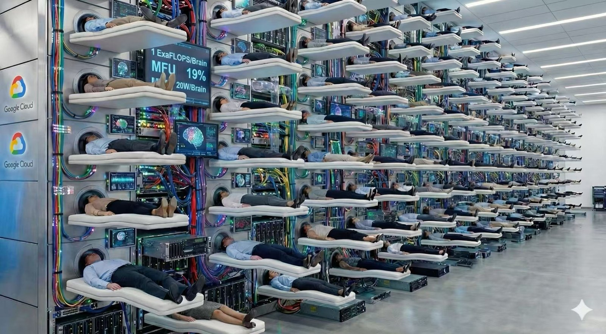

这一讲按时间顺序讲一个完整的故事：一条链怎么被剪断、 剪断之后欠下了什么账、这笔账后来被四拨人用四种办法还、 以及为什么最后又绕回了那块固定大小的小本子。 多图、少字、说大白话。
⭐ 想自学这一讲？—— 这一讲配了一份讲义， 而它真正的用法，可能跟你想的不一样。
把这一讲的讲义整份丢给 AI， 你会得到一个带着这一讲全部背景的助教： 它不只知道这些内容，它还知道该怎么讲 —— 按什么顺序、哪一句要停一拍、人通常卡在哪儿、卡住了拿什么话去接。 然后让它带着你把这一讲走一遍。
为什么是丢讲义，不是丢你现在看的这份正文？ 正文给的是知识；讲义多出来的那一半，是 怎么把这些知识讲进一个人脑子里 —— 每一格的目的、哪一句是高点、常见的误解长什么样、被问到了拿什么答。 而后面这一半，正是任何一个通用 AI 没有的东西。
它本来那个用途当然也照旧：你要自己上台讲这一讲， 照着那份稿子讲就行 —— 台词、屏幕切到哪一格、每段几分钟都写着。 ⛔ 顺带说清：讲义不是正文的摘要 —— 它按「台上怎么说」重排， 很多话在纸上根本不该出现（反过来也一样）。

⛔⛔ 开场第一分钟，先审这三个数。
⭐⭐ —— 这一讲从头到尾都这么读数。
⭐⭐⭐ 这一讲的主线：
RNN 那条路，像人脑的思考方式；Transformer 那条路，像机器的思考方式。
一个省电、省地方，一个快、能并行 ——
而这也正是人和机器的区别本身。
2020 年的 GPT-3，一次只能记住 2048 个 token。那时候它是个很会接话的 补全器 —— 你给一段，它接一段，接得挺像样。
今天你让它干的活完全变了：读完一整个代码库再回头改对一处 bug、 一口气走完几十步的工具链、还得记得住你半小时前改过主意。 2K 的上下文，连一个文件都读不完。
⭐⭐ 上下文长度就是模型的工作记忆。
记不住，就什么都干不成。
⛔ 而每记住一分，要付的钱是实打实的显存 ——
模型每吐一个字都要回看前面所有字，于是把每个字算出来的 K、V 存着不重算，
存下来的这一堆就叫 KV cache，它跟着上下文线性长。
⭐ 所以这六年注意力的全部演化，只在做一件事：让「记得住」这件事付得起。
DeepSeek V3（671B，61 层，128 个注意力头，head_dim 128），
128K 上下文、单个用户、bf16 存。
同样这个形状，换四种注意力，KV cache 各是多大？
四行分开选，各选各的。
488 / 30.5 / 3.8 / 8.6 GiB。
算法就一条：每 token 每层要留下几个数，
乘 61 层、乘 2 字节、乘 131,072 个 token。
MHA ＝ 2×128×128 ＝ 32,768 → 488 GiB；
GQA-8 ＝ 2×8×128 ＝ 2,048 → 30.5（16×）；
MQA ＝ 2×1×128 ＝ 256 → 3.8（128×）；
MLA ＝ 压缩维 512 ＋ RoPE 64 ＝ 576 → 8.6（56.9×）。
⭐⭐ 488 GiB 到底是多大？按专题二推的
可分配口径（94.74 GiB／device）算，488 ÷ 94.74 ＝
5.2 个 device，也就是约 2.6 块 v7 芯片。
一个用户、一段输入，就要把两块半芯片的 HBM 整个拿来放 KV
—— 而模型权重还一个字节都没放进去。
📌 RoPE（旋转位置编码）的职责先摆正：
「谁在前谁在后」并不归它管。那件事是因果掩码白送的
—— 每个位置只看得见自己左边，多堆几层就能数出自己前面有几个人
（NoPE，arXiv 2305.19466，NeurIPS 2023 ——
直接证明了 decoder-only 不加任何显式位置编码也学得会顺序）。
⭐ RoPE 真正加进来的是另一样东西：「我跟它差几格」。
给每个位置的 Q 和 K 按它的位置转一个角度，点积时两个绝对角度相减，
相对距离就直接出现在打分里—— 零参数，而且每一层都能用，
不必靠堆层去数。
⭐ 它只改 Q/K，不改 V。后面 §五会讲它给 MLA 惹的麻烦——
上面那 64 维的成本，买的就是这一件事。
⭐⭐ 这道题真正的题眼在 (c) 和 (d) 的大小关系：
MQA 只要 3.8 GiB，比 MLA 的 8.6 还小 2.25 倍。
MLA 并不是最省的那个。
⭐ 所以这一支的目标从来不是「谁存得最少」——
MQA 早在 2019 年就把它压到头了，代价是质量掉得厉害。
真正要比的是「同样一份字节，换回多少能力」。
这正是第五节要讲的那条线。
⚠️ 一个口径： 488 GiB 是「假如 V3 用 MHA」的反事实数字， 不是 V3 的实测值 —— V3 从第一天就是 MLA。 而且这里沿用了 V3 论文比较表的口径（K、V 都按 head_dim=128 算）； V3 真实的 K 每头是 128+64＝192 维，严格算这个基线还会更大一点。
上一讲那把尺子：算力 ÷ 带宽 ——
每从内存搬一个字节，这台机器配套能算多少次。
在 TPU v7 上，两层各是多少？两行分开选。
(a) 约 313。(b) 比 HBM 低一个量级，落在几十这一档。
(a) ＝ 2,307 TFLOP/s ÷ 7.37 TB/s。
这个数不是本讲新造的，它就是专题二整整一节在立的那条屋脊线。
⭐ (b) 最容易选反，而选反的人通常是把「快」和「门槛高」搞混了： 片上更快，所以分母变大 —— 同一个分子除以更大的分母，商只会更小。 越靠近计算，这条线越低。 门槛低意味着：同一个算子挪到片上以后，更容易变成算力受限。
⛔ 而 (b) 为什么只给量级、不给数 —— 这才是这道题最想教的一件事：
VMEM 的带宽官方没有公开。
而屋脊点乘以算力就等于带宽 —— 给出一个精确的屋脊点，
等于把那个没公开的数反推出来。所以我们到「几十这一档」为止，不往下猜。
⭐ 这正是专题二第 6 节那四句问法里的一句：
先问这个数的出处和口径，再用它。
而那四句不是拿来审别人材料的 —— 是先拿来审自己的。
⭐ 这八年真实发生过的事 —— 四条支线，各修各的毛病。
⭐ 请记住你此刻看它的感觉。 读到最后一章，我会请你滚回来。
⭐ 这一节没有新知识，它只是一张地图 —— 所以它不编到正课里，叫第零节。 它唯一的作用，是让你在最后那一章有一个回得去的地方。
⭐ 具体的账 —— 先看列，不用看懂行。 一个循环里几层便宜的、上下文多长、KV cache 多大 —— 这一讲结束时，每一行你都读得下来。
📌 这张表的取数规则（⭐ 2026-09-13 补 —— 由表长出来的结论全靠这条规则撑着）
config.json）。max_position_embeddings。⚠️ 它是容量不是能力 —— 声明 10M 不等于 10M 上都好用。⚠️ 凡是上下文 < 128K 的行，那一格的 KV 是反事实值（把它的形状放到 128K 上算）—— 包括「846 倍」的分子 GPT-3，它的实际上下文只有 2K。这个倍数是用来看量级的，不是用来引用的。
⭐ 点表头可以排序—— 时间 / 厂商 / 便宜层占比 / 上下文 / KV 大小，再点一次反向。默认按时间。两种模式下排序都作用在全部 44 行上。
| 时间 | 模型 按厂商 | 一个循环 一格＝一层 | 上下文 声明值 | KV cache＠128K | 备注 |
|---|---|---|---|---|---|
| 2020-05 | GPT-3 175B 稠密 · 96 层 | MHA —— 每一层都是这个 | 2K | 576 GiB（10 条才画得下） | 基线：KV 按头数线性长，没有任何省法起点。576 GiB 这把尺，后面所有省下来的都拿它比 |
| 2022-04 | PaLM 540B 稠密 · 118 层 | MQA —— 每一层都是这个 | 2K | 15 GiB | 48 头共用 1 组 KV —— 第一次大规模砍 KVMQA —— 第一次把 KV 砍到只剩 1 组 |
| 2023-02 | Llama 1 65B 稠密 · 80 层 | MHA —— 每一层都是这个 | 2K | 320 GiB（6 条才画得下） | 一代还是纯 MHA，下一代才上 GQA |
| 2023-07 | Llama 2 70B 稠密 · 80 层 | GQA —— 每一层都是这个 | 4K | 40 GiB | MQA 砍太狠掉质量，GQA 是折中（arXiv 2305.13245）GQA —— 砍到 1 组太狠，折中版成了此后十年的默认 |
| 2023-09 | Mistral 7B 7B 稠密 · 32 层 | SWA —— 每一层都是这个 | 32K | 512 MiB | ⭐ SWA 进主流的第一枪，窗口 4096SWA —— 「不看全部」这个想法的起点，窗口 4096 |
| 2024-03 | Jamba 52B/12B · 32 层 | MambaMambaMambaMambaMambaMambaMambaGQA | 256K | 2.0 GiB | ⭐⭐ 层间混合的开源起点，比 MiniMax-01 早十个月层间混合的开源起点，7:1 —— 比 MiniMax-01 早十个月 |
| 2024-05 | DeepSeek-V2 236B/21B · 60 层 | MLA —— 每一层都是这个 | 128K | 8.4 GiB | 低秩压缩。KV 降 93.3%＝只剩 2.25 组 GQAMLA 首发。换了个思路：不砍头数，改存压缩过的隐向量 |
| 2024-06 | Gemma 2 27B 27B 稠密 · 46 层 | SWAFULL | 8K | 24 GiB | ⭐ 谷歌开始交替：1:1，窗口 4096 |
| 2024-07 | Llama 3.1 405B 稠密 · 126 层 | GQA —— 每一层都是这个 | 128K | 63 GiB（2 条才画得下） | ⛔ 不上花招硬推 128K 的代价：比 Llama 2 还多 |
| 2024-11 | 混元 Hunyuan-Large 389B/52B · 64 层 | GQA —— 每一层都是这个 | 128K | 10 GiB | ⭐ CLA：每 2 层共享一份 KV —— 旋钮①的第三招 |
| 2024-12 | DeepSeek-V3 671B/37B · 61 层 | MLA —— 每一层都是这个 | 160K | 8.6 GiB | ⭐ 专题一的锚点。跟 V2 只差 1 层，KV 几乎相同跟 V2 同机制，但参数大 2.8 倍而 KV 只差 1.7% —— KV 脱钩的证据 |
| 2025-01 | MiniMax-01 456B/45.9B · 80 层 | LTNLTNLTNLTNLTNLTNLTNGQA | 4M | 5.0 GiB | ⭐ 线性首次上旗舰。训练 1M、外推 4M（config 的 10M 是容量）线性第一次上到几百 B 的规模，同样是 7:1 |
| 2025-03 | Gemma 3 27B 27B 稠密 · 62 层 | SWASWASWASWASWAFULL | 128K | 10 GiB | ⭐⭐ 5:1、窗口 1024 —— 小米那个 5:1 不是首创滑窗混合定型：5 层窗口配 1 层全局，窗口反而收到 1024 |
| 2025-03 | RWKV-7 Goose 0.19B–2.9B · 纯 RNN | RWKV —— 每一层都是这个 | 无限（理论） | 0（无 KV） | ⭐ 全表唯一 KV 为零：常数内存、常数单 token 时间另一头的极端：纯 RNN，KV cache literally 是 0 |
| 2025-04 | Llama 4 Scout 109B/17B · 48 层 | SWASWASWAFULL | 10M | 7.1 GiB | 块状局部 8192 ＋ NoPE 全局。⚠️ 声称 10M，又一个报容量的 |
| 2025-04 | Qwen3-235B-A22B 235B/22B · 94 层 | GQA —— 每一层都是这个 | 40K | 24 GiB | ⭐ 千问转线性之前的那一代：纯 GQA-4 |
| 2025-07 | Kimi K2 1T/32B · 61 层 | MLA —— 每一层都是这个 | 128K | 8.6 GiB | ⭐ Kimi 上 KDA 之前：纯 MLA，架构名就是 DeepseekV3 |
| 2025-07 | GLM-4.5 355B/32B · 92 层 | GQA —— 每一层都是这个 | 128K | 46 GiB | ⭐⭐ 智谱上 DSA 之前：46 GiB → GLM-5 的 11，降 4 倍 |
| 2025-08 | gpt-oss-120b 117B/5.1B · 36 层 | SWAFULL | 128K | 4.5 GiB | ⭐ OpenAI 首个开放权重：1:1 交替、窗口 128 ＋ sink |
| 2025-09 | DeepSeek-V3.2-Exp 671B/37B · 61 层 | DSA —— 每一层都是这个 | 160K | 8.6 GiB | ⭐ 稀疏的起点：V3 ＋ Lightning Indexer。⛔ KV 跟 V3 一样DSA —— 层内稀疏起点：不是少几层，是每层只挑一部分 token 看 |
| 2025-09 | Qwen3-Next 80B/3B · 48 层 | GDNGDNGDNgAT | 256K | 3.0 GiB | 36 线性 ＋ 12 全注意力（GQA-2，头维 256）GDN —— Mamba 那一支的直系后代第一次进主流大模型 |
| 2025-10 | Ling-1T（Ling 2.0） 1T/50B · 80 层 | GQA —— 每一层都是这个 | 32K | 40 GiB | ⭐⭐ Ling 2.6 就是从它改造的：40 GiB → 1.4 GiB |
| 2025-10 | MiniMax M2 230B/10B · 62 层 | GQA —— 每一层都是这个 | 192K | 31 GiB | ⛔ 「退回全注意力」≠ 什么都没做：GQA-8 ＋ partial RoPE反例：退回全注意力。证明「全注意力」说的是旋钮③，不是① |
| 2025-10 | Kimi Linear 48B/3B · 27 层 | KDAKDAKDAMLA | 1M | 1008 MiB | 20 KDA ＋ 7 MLA（末层强制 full）。已用 NoPEKDA —— 线性的新一代，配 NoPE 的 MLA |
| 2025-12 | DeepSeek-V3.2 671B/37B · 61 层 | DSA —— 每一层都是这个 | 160K | 8.6 GiB | Exp 转正。index_topk 512 → 2048，KV 与 V3 一样Exp 转正：稀疏从实验走进生产，top-k 512 → 2048 |
| 2025-12 | Mistral Large 3 675B/41B · 61 层 | MLA —— 每一层都是这个 | 288K | 8.6 GiB | ⭐ MLA 超参跟 V3 逐字段一样；参数读自 params.jsonMLA 扩散到了西方：欧洲最大开源旗舰逐字段照抄 V3 的 MLA 超参 |
| 2026-01 | 小米 MiMo-V2-Flash 309B/15B · 48 层 | SWASWASWASWASWAFULL | 256K | 5.0 GiB | 窗口 128。卡上自称 KV 省近 6×，48÷8 正好对上 |
| 2026-02 | GLM-5 744B/40B · 78 层 | DSA —— 每一层都是这个 | 198K | 11 GiB | MLA ＋ DSA。GLM-5.1 同架构，只有后训练不同 |
| 2026-02 | MiniMax M2.5 230B/10B · 62 层 | GQA —— 每一层都是这个 | 192K | 31 GiB | ⚠️ 架构与 M2 逐字段相同，稀疏要等 M3 |
| 2026-03 | Qwen3.5 397B/17B · 60 层 | GDNGDNGDNgAT | 256K | 3.8 GiB | 45 线性 ＋ 15 全（config: full_attention_interval 4）千问把混合注意力从旁支 Qwen3-Next 收进了主线 |
| 2026-04 | 小米 MiMo-V2.5-Pro 1.02T/42B · 70 层 | SWASWASWASWASWASWAFULL | 1M | 6.3 GiB | 60 SWA ＋ 10 全，窗口 128 —— 1M 那档最省的 |
| 2026-04 | DeepSeek-V4-Pro 1.6T/49B · 61 层 | HCAHCACSAHCACSA | 1M | 999 MiB | ⛔ 跟 Flash 不同：前两层是 HCA。1.6T 而 KV 不到 1 GiB |
| 2026-04 | Ling 2.6-1T 1T/63B · 80 层 | LTNLTNLTNLTNLTNLTNLTNMLA | 256K | 1.4 GiB | ⛔ 不是 KDA；思考版 Ring-2.6-1T 架构逐字段相同 |
| 2026-04 | Gemma 4 31B 31B 稠密 · 60 层 | SWASWASWASWASWAFULL | 256K | 11 GiB | ⭐ 全局层 K 维加倍 ＋ K=V 共享，窗口 1024旋钮①又出新招：全局层 K 维加倍再让 K=V 共享一份 |
| 2026-05 | DeepSeek-V4-Flash 284B/13B · 43 层 | SWASWACSAHCACSAHCA | 1M | 697 MiB | ⭐ 2 层 SWA 引导，CSA／HCA 交替。MLA 换成 shared-KV MQA终点。697 MiB，比 GPT-3 小 846 倍，而且 MLA 被整个换掉了 |
| 2026-06 | GLM-5.2 744B/40B · 78 层 | DSA —— 每一层都是这个 | 1M | 11 GiB | ⭐ ＋IndexShare：四层共用一个 indexer。198K → 1M 靠这步IndexShare —— 稀疏的第二阶段：索引本身变成了新的开销 |
| 2026-06 | MiniMax M3 428B/23B · 60 层 | MSA —— 每一层都是这个 | 1M | 15 GiB | ⭐⭐ GQA-4 ＋ 稀疏。KV 比走 MLA 的 GLM-5.2 还大 |
| 2026-07 | Kimi K3 2.8T/104B · 93 层 | KDAKDAKDAgMLA | 1M | 3.4 GiB | 69 KDA ＋ 24 Gated MLA（末层 92、93 连着两层 full） |
| 2026-07 | 混元 Hy3 295B/21B · 80 层 | GQA —— 每一层都是这个 | 256K | 40 GiB | ⛔ 80 层全 GQA-8 —— 线性一层都没上 |
| 2026-07 | Ling-3.0-flash 124B/5.1B · 42 层 | KDAKDAKDAKDAKDAgMLA | 256K | 1008 MiB | 跟 2.6 换了一支。同代 tiny 用 3:1，它用 5:1；3.0 无 1T |
| 2026-08 | GLM-5.3 744B/40B · 78 层 | DSA —— 每一层都是这个 | 1M | 11 GiB | ⚠️ 跟 5.2 同一个 base，纯后训练，架构没动 |
| 2026-08 | 混元 Hy4-preview 770B/49B · 78 层 | gDSA —— 每一层都是这个 | 1M | 11 GiB | 78 层全稀疏 ＋ IndexCache（每 4 层 1 层算索引）跳过线性那一支，从纯 GQA 直接跳进全层稀疏 |
| 2026-08 | ⭐ GLM-5.3-Flash 320B/18B · 45 层 | KDAKDAKDADSA | 1M | 1.5 GiB | 34 KDA ＋ 11 稀疏 MLA —— GLM 首次线性＋稀疏同锅唯一一个把②和③同锅：34 层 KDA ＋ 11 层稀疏 MLA |
| 2026-08 | Qwen3.8-Flash-Next 125B/6B · 48 层 | GDNGDNGDNgAT | 256K | 3.0 GiB | ⭐ Qwen4 架构预览；新东西在 51B 的 n-gram 嵌入表 |
⭐ 这张表的一句话落点：同一个 128K 长度， 从 GPT-3 的 576 GiB 到 DeepSeek-V4-Flash 的 697 MiB，六年 846 倍 —— 而这不是一个旋钮拧出来的，三个旋钮各贡献了一段。
⭐ 这张表一眼能看出八件事 （以下统计恒按全部 44 行算，切到 Highlight 也不变 —— 不然「有几家怎么样」这种话会跟着显示模式变，那就不是结论了）
⭐ 这张表有两种读法，右上角可以切： Highlight（默认）只留撑起这段历史的那些行，备注写的是「它凭什么在这条线上」； 全部是完整参照表，备注是这一行独有的那句话。
⭐ 这一讲按时间顺序讲，一步一步走。 每一步只回答两个问题：上一步欠下了什么，这一步拿什么来还。 —— 所以读的时候不用记名词，记「谁欠了谁」就够了。
⚠️ 想看推导、消融表、我们自己在 v7 上的实测数据，去 L300 完整版；这一份只讲故事线。
2K ＝ GPT-3 的 max_position_embeddings；1M 与 846 倍见本课模型表（128K、BF16、batch 1，两端都取 ≥100B 的模型）
⚠️ 512 倍（2K→1M）与 846 倍（KV 降幅）是两个口径，本图刻意分两行给出 —— 把它们相乘是把两把尺子当成一把
两张趋势图的点全部由 topic03_models.ROWS 现算，没有手写常数；绿线是「跑到当月为止的最好成绩」，不是拟合曲线
右图只收 ≥100B 的模型 —— 跟「846 倍」同一个口径。不过滤的话包络线会被 Mistral 7B 的 512 MiB 拽到底，而那只是因为它本来就小
RWKV-7 的 KV ＝ 0，对数轴上画不出来，没有进右图
这本书里后面出场的每一个名词，解的都是同一道题： 话是有先后的，模型总得有个地方放「刚才说了什么」。 放在哪儿、放多少、要不要每次全看一遍 —— 三十年就吵这一件事。
1990 年给出的答案朴素得近乎粗暴：带一个盒子。
读进一个字，就把盒子里的东西和这个字搅一搅，再写回盒子；读下一个字，再搅一次。
读到最后，盒子里剩下的，就是这段话在模型眼里的全部。
⭐ 而这里有一个决定了后面三十年的细节：这个盒子从头到尾一样大。 喂它十个字，盒子这么大；喂它十万个字，盒子还是这么大。
Elman 1990《Finding Structure in Time》—— context units「copied … on a one-for-one basis, with fixed weight of 1.0」；LSTM: Hochreiter & Schmidhuber 1997；GRU: Cho et al. 2014
⛔ 不过「搅一搅」是个会骗人的比喻 —— 它容易让人想成搅匀，而搅匀是会把东西毁掉的。 所以把盒子打开看一眼：它其实不是搅匀。
Ⓑ 那两个角度是现场采样算的（各 4000 次随机向量对）：d=2 时 E|cosθ| ≈ 0.63（夹角约 51°，精确值是 2/π）；d=1024 时 ≈ 0.0248（约 88.6°）。渐近式 sqrt(2/(π·d)) 与实测在 d≥64 时吻合到三位小数
⛔ Ⓐ 刻意不写出那个式子 —— 本节面向还没见过它的人，公式会把该看见的画面挡住；⛔ Ⓑ 右半不画具体衰减曲线 —— 快慢取决于那个矩阵的谱，没有通用曲线，画出来就是编
Ⓐ 那张尺寸表与「回线不训练」出自 Elman 1990 《Finding Structure in Time》原文：「Recurrent connections are fixed at 1.0 and are not subject to adjustment」；句子模拟「hidden and context layers contained 150 nodes each」，输入输出 31 个节点。参数量由 31/150 推算，非原文给出；同一篇里最小的 XOR 模拟只有 2 个隐藏单元
⛔ 精度那一栏本图故意空着 —— 那个年代的论文不写精度，因为它当时还不是一个可以权衡的设计维度。本课不替它补一个数
⚠️ 落点带里的「2017」指的是 Q/K/V 这套命名和 KV cache 这笔账；「拿一个查询去跟一串历史比相似度再加权平均」这件事本身，2014 年的注意力就已经在做了
⭐⭐ 这一节只要记住三句。
📌 ① 名字拆开：RNN ＝ Recurrent Neural Network，中文叫循环神经网络。
⭐ 那个 R，指的就是你刚看到的那条回线。
盒子里的东西算完之后，不是走了，是绕回去当下一步的输入。
词源上很直白：recurrent ＝ re-（回）＋ currere（跑），
字面就是「往回跑」。
⭐⭐ 而这个词不是数学家造的，是从解剖学借的 —— 1901 年 Cajal 在小脑皮层观察到 recurrent semicircles， 1933 年 Lorente de Nó 发现 recurrent, reciprocal connections。 在那之前，神经系统一直被当成纯前馈的。
⛔ 中文有个常见误译要避开：「递归神经网络」不是它。 递归（Recursive）是另一个东西，沿语法树往下钻； RNN 是循环，沿时间轴转圈。一个往深处钻，一个原地打转。
② 那个盒子到底多长？ —— 小得超乎想象。图里给了最大的那个（150）； 同一篇论文里字母预测那两个只有 20，最小的 XOR —— 2。 整篇的区间就是「2 到 150」。
③ 什么精度？
—— 论文没写。而这正是答案的一部分：那个年代精度还不是一个
可以权衡的设计维度，它就是机器上的普通浮点数，没人把它当旋钮。
⭐ 一个量什么时候开始被写进论文，本身就是个信号 ——
说明它那时候才变成一件要权衡的事。
④ 真能用的时候多大？ —— 150 是玩具尺寸。第一个真正能用的大 RNN 是 2014 年那篇 seq2seq：4 层、每层 1000 个 cell。而原文紧接那句才是精华： 「the deep LSTM uses 8000 real numbers to represent a sentence」。
⛔⛔ 八千 → 两千六百二十亿（开篇那 488 GiB 按 bf16 算）。 三千两百七十五万倍。 —— 这就是「压成一团」和「原样留着」之间的真实距离。
⑤ 那几块矩阵各自在提取什么？—— 答案有点反直觉。
注意力那边 Q / K / V 的语义人人讲得清： Q ＝ 我要找什么，K ＝ 我能回答什么，V ＝ 找到我能给什么。
⛔ 而 RNN 没有这种分工 —— 不是我们没研究清楚，是架构本身没把角色分开。 输入矩阵写进去的东西既是内容、又是将来被检索的依据； 循环矩阵既保留又变换，既是记忆的保持器又是检索器。
⭐⭐⭐ 而这正好说出了注意力为什么是个突破： 它把「记什么」和「怎么找」拆成了两个独立的参数化。 在 RNN 里，这两件事是同一个矩阵在兼职。
⭐ 更准的说法是三档：RNN 的状态是「没有索引的一团」， 线性注意力的状态是「带索引的记忆」，KV cache 是「一条一条原样摆着」。 中间那一档到第七章会回来。
⑥ x 是什么、y 是什么？它也是在预测下一个词吗？
x ＝ 当前这一个 token 的向量；h ＝ 读完前面所有词之后的状态； y ＝ 状态过输出矩阵，得到一个跟词表一样长的向量， softmax 之后就是「下一个词是每个词的概率」。
⭐⭐ 所以是的 —— 它就是 next-token prediction。 原文写着：「The task on each input cycle was to predict the … next word in the sequence.」一九九〇年，同一个训练目标，用了三十五年。
⚠️ 顺带交代那时候的「词向量」：Elman 给每个词一个
31 位、只有一位是 1 的向量，随机指定、不参与训练。
原文点明两个后果：彼此完全正交，且不携带任何词性或词义。
⭐ 这恰好说出了 embedding 后来是干什么的：当年是完全正交但零信息，
今天是学出来的稠密向量 —— 只做到「近似正交」，换来的是它开始携带意思。
⑦ 什么时候变成二维的（矩阵状态）？ —— 比多数人以为的早得多，而且它不是被发明的，是被重新发现的。
90 年代初 Schmidhuber 那一支的 Fast Weight Programmers，用的就已经是 外积累加出来的矩阵。2021 年那篇把两者形式等价证了出来 （arXiv 2102.11174，作者里有 Schmidhuber 本人）。
⭐⭐ 而摘要里那句最值钱：那些外积拼的是 「self-invented activation patterns（today called keys and values）」 —— 今天叫 key 和 value 的那两样东西，三十年前就以外积的形式出现过。
⑧ 那个「转一下」到底在转什么？是淡化记忆，还是腾地方？ —— 两个都是，而且它们是同一件事。
⛔ 先别混：那条回线固定 1.0、不训练，它只负责把状态搬到下一步。 真正在「转」的是那块 150 × 150，也就是占了七成参数的那一块。 —— 搬运是免费的，收费的是搬过来之后怎么读它。
⭐ 「转一下」这个说法只说对了三分之一。 任何一个方阵作用在向量上，一定是三件事叠在一起： 换个角度看 → 各个方向按各不相同的倍率缩放 → 再换个角度摆回去。 要害全在中间那一步。
⭐⭐ 最要紧的是：它不是均匀地淡化，是挑着方向淡化的。 哪些方向快忘、哪些慢忘 —— 这就是那块矩阵真正在学的东西。
那「提取」是怎么发生的？ —— RNN 里根本没有一个叫「提取」的步骤。它藏在乘法里。
把那块矩阵按行看：矩阵乘 h，第 i 个输出就是第 i 行跟 h 做内积。 而内积就是提取 —— h 是一堆近似垂直的方向叠出来的， 你拿一条向量去点它，跟你对齐的分量被读出来，垂直的那些自动约掉。
⭐⭐ 所以每一行就是一把尺子、一个探针。150 行就是 150 个探针，
同时去量这块白板；量出来的 150 个数，重新摆成新的 h。
—— 「转一下」同时在做两件事：把旧状态读一遍，再把读到的重写成新状态。
「融入」呢？ —— 就是向量加法，简单得多。新字被另一块矩阵映到同一个空间里的 某个方向，然后加上去。不是覆盖，是叠加：旧方向一点没动，只是多了一个分量。
⛔ 但这里有一层前面没说透的：叠上去之后，新的和旧的就分不清谁是谁了 —— 除非有探针能把它们分开。而那个探针，就是下一步那块矩阵的某一行。
⭐⭐⭐ 于是整件事是个闭环：「映过来」那块决定往哪个方向写， 「转一下」那块的行决定从哪个方向读 —— 这两头必须对上暗号。
⛔ 而它们隔着多少步的连乘？隔着 t 步。梯度要穿过那 t 次连乘，
才能告诉这两块矩阵该怎么对齐。
⭐⭐ 这才是长程依赖学不好的真正根因 —— 不是「记不住」，
是读写两端对不上暗号，而且越远越对不上。
⭐⭐⭐ 所以注意力的突破可以说得比「它把记什么和怎么找分开了」更准一层：
RNN 的读写要跨 t 步对齐；注意力的读写在同一步里直接点积。
Q 和 K 当场碰一下，对不对得上立刻就知道，不隔任何连乘。
—— 它不是把对齐学得更好了，是把需要对齐的距离砍成了零。
📌 口径。「方阵 ＝ 旋转 × 各向缩放 × 旋转」是奇异值分解， 数学事实；「谱决定衰减或爆炸」是梯度消失那套标准分析。 ⚠️ 而「读写要跨 t 步对齐」这个说法是本课的表述， 不是文献里的标准提法 —— 它底下就是长程依赖那套分析。
这个设计有一个今天看来仍然极其诱人的好处：不管这段话多长， 每走一步要搬的东西一样多 —— 成本跟长度无关。
坏处写在同一句话里：盒子只有一个。 想更新第三个字的盒子，得先等第二个字更新完；一万个字，就老老实实排一万轮。
「排一万轮」听上去只是慢一点。真正难受的是它落到机器上的样子 —— 每一轮都要把整个模型的权重从显存里重新搬一遍，然后只拿它算一丁点活。
NVIDIA《Recurrent Layers User's Guide》—— 「a GEMM with one dimension of one」、「can combine these GEMMs over the minibatch size, but not over different sequence steps」；Vaswani et al. 2017 (arXiv 1706.03762) 引言
⭐ 那个 313 不是这一讲新造的数 —— 它就是专题二 整整一节在立的那条屋脊线：每从显存搬一个字节，这台机器配套能算 313 次。
⛔ 所以这一条不是「RNN 慢一点」，是买了台很贵的机器，而它九成时间在等着搬东西。
📌 当年不是没人想办法。
既然病根是「权重每一步都要重搬一遍」，那就干脆别搬 —— 把权重钉死在芯片内部，一步步往下走的时候它一直待在那儿不动。 这招叫 persistent RNN，2016 年百度硅谷 AI 实验室做的。
⭐ 记住这个念头 —— 它后面还要再赢一次。 七年后有人把同一句话用在了另一个算子上：「别让中间结果落回显存」。 那个东西叫 FlashAttention，第九章会讲到。
⛔ 可惜这一招救不了 RNN —— 能钉在片上的模型就那么大，而且它只治了「搬得慢」，没治「必须排队」。
第一个痛是算不快。另外两个更伤 —— 它们不是慢，是真的学不会。
Bengio, Simard, Frasconi 1994（梯度消失）；Hochreiter & Schmidhuber 1997（LSTM）；Bahdanau et al. 2014 (arXiv 1409.0473)「a fixed-length vector is a bottleneck」
Vaswani et al. 2017 (arXiv 1706.03762) 表 1；Martin & Cundy 2018 (arXiv 1709.04057)：非线性依赖挡住并行，只有线性依赖能用 parallel scan 扫
这一章只留两句话。
① 盒子的好处：每一步要搬的东西不随长度变。
② 盒子的坏处：盒子只有一个，所以只能一步一步来；而且它装不下一整段长话。
⭐ 下一章那一刀，冲的是 ②。
⛔ 但它会把 ① 一起扔掉。
这本书剩下的八章，讲的都是怎么为「扔掉 ①」付账。
⭐⭐ 不过在那一刀落下来之前 —— 既然「回头看一眼」这个配件这么好使，那能不能把 RNN 整个扔掉，只留配件？
上一章最后那个问句还悬着。 2017 年有人真就这么干了 —— 而且论文标题就是这个意思。
⛔ 注意力不是 2017 年发明的。
它 2014 年就有了 —— 而且一开始，
它是长在 RNN 身上的一个小配件。
⭐ 所以那一刀真正干的事，不是发明注意力，是把长着配件的那条链整个扔掉，只留配件。
注意力不是谁灵光一闪想出来的。 它是被人一次次嫌弃出来的 —— 每一版都有人指着上一版说「这儿不对」。
① Bahdanau 等 arXiv 1409.0473
② 点积打分出自 Luong 等 arXiv 1508.04025（2015），该文同时给了 dot / general / concat 三种打分
⛔ Vaswani 等 arXiv 1706.03762 §3.2.1 加的是 1/√d_k 那个缩放，不是点积本身 —— 原话是「identical to our algorithm, except for the scaling factor」；③ 同文 §3.2.2（多头补偿分辨率）
⚠️ 画面里的句子、方框数量都是示意，不对应任何一次真实实验
⭐⭐ 图里蓝框那一句，是这本书的第一条暗线。
同样的事后面还会发生三次，一次比一次露骨。到第六章它会变成： 连「挑哪几个字来看」都得按块挑，因为机器讨厌零零散散地取数。
⛔ 这本书里不少公式长成那个样子，并不是数学上非如此不可 —— 而是机器只认那一种形状。
Bahdanau 自己讲过这段。他当时是 Bengio 实验室的实习生，试过一个「两个游标」的方案， 太复杂，做不出来；退而求其次写了个死板的对角线对齐，能跑，但不好看。 然后有一天 ——
「我忽然想到，要是能让解码器自己学会该把游标放在原文的哪个位置，那该多好。 这个念头多少是中学学英文时做翻译练习来的 —— 你翻译的时候，目光会在原文和译文之间来回移动。
我把这个『软搜索』写成了 softmax，再对双向 RNN 的状态做加权平均。 第一次跑就成了，我兴奋极了。」—— Dzmitry Bahdanau，2022 年回复 Karpathy 的邮件
他给这个架构起的名字叫 RNNSearch。他后来说：「这名字不怎么样。」
⭐ 「注意力」这三个字，是 Bengio 在最后几轮修改里加进去的。
「在我们提出注意力之前，做法是让一个循环网络把整段原文读完， 然后生成译文。可人根本不是这么翻译的。
这就好比先把整本法文书从头读到尾，然后凭着脑子里的印象把英文版写出来 —— 肯定会丢细节，因为我们的脑子没法一次装下那么多东西。
办法是：写每一个英文词的时候，都允许回头去看法文书里的任意一处细节。 而为了能用反向传播训练，注意力必须是『软』的 —— 不是挑中某一个位置，而是有一份总额固定的注意力，可以分摊到所有位置上。」
—— Yoshua Bengio，被问到为什么用「attention」这个词时
⭐⭐ 最后那句话，顺手解释了这一讲后面所有的 softmax。
「总额固定、分摊到所有位置」—— 就是等一下 §2.4 那张图里 那根一直加到 100% 的百分比条。 它不是某个数学家的偏好，是为了能被梯度下降训练而必须付的一个形状。
📌 上面两段自述的出处：Karpathy 2022 年去信问 Bahdanau， Turing Post 整理并另行采访了 Bengio。本讲的译文按原文意思重述，不是逐字直译。
📌 这本书往后的读法：每讲到一个新名词， 我都会先说它在修上一版的哪个具体毛病。 —— 「某某灵光一闪」这件事你学不会；「上一版这个地方不对」，你下次能照着用。
Vaswani et al. 2017 (arXiv 1706.03762) 表 1：自注意力 串行步数 O(1)／最长路径 O(1)；循环层两项都是 O(n)。因果遮罩见同一篇论文 §3.2.3：把非法连接「setting to −∞」
链剪断了，可话还是得连起来读。不靠一格一格传，那靠什么？
「query / key / value」与「输出是 value 的加权和」是 Vaswani 2017 论文 §3.2 的原话，不是本课编的比喻；图中那组权重（5/30/8/45/7/5 ％）是示意值，不是实测
⚠️ 本图只画注意力 —— 一层 Transformer 里还有 FFN、残差、归一化，它们不在本专题这条轴上（本专题的账本只有 KV cache）
📌 √d_k 就是点积的标准差：
q·k 是 d_k 个乘积之和，方差随维度线性增长 —— 除掉它，
把打分的尺度拉回跟维度无关的常数量级。
⛔ 不除，整碗货会被一家吃掉； 除了，才混得出一碗真正的混合物。
Vaswani et al. 2017 论文 §3.2.2：「jointly attend to information from different representation subspaces」、「With a single attention head, averaging inhibits this」；h = 8，d_k = d_v = d_model/h = 64
Shazeer 2019 (arXiv 1911.02150)《Fast Transformer Decoding: One Write-Head is All You Need》摘要 —— 本课模型表第二行 PaLM 用的就是它
前面讲的都是想法，现在看它落成什么。Ⓑ 那三堆里， 只有一堆会跟着对话一直变大 —— 那一堆就是 KV cache。
⛔ 这张图刻意不画多头、不画残差与 MLP、不写任何张量形状 —— 完整的那张（沿用 How to Scale Your Model 的记号）就在本节里折着，点开即可；后面几章还会把它重画并点亮被改动的那一处
⚠️ Ⓐ 里「问题 / 钥匙 / 内容」是 Q / K / V 的中文说法，本课从头到尾用这一套；⛔ 「拌到一起」指的是按权重加权求和，不是把内容搅混 —— 这一点跟第一章那个「叠上去不是搅匀」是同一件事
⚠️ Ⓒ 里那六个字只是画面，真实的一格里装的是两条向量，不是两个汉字
⭐⭐ 这一讲的主角，就是那个 S。
后面每一章你只要盯着它问一句：这一招是让 S 前面的系数变小、 让每步读到的 S 变少，还是干脆让 S 从形状里消失？
⭐ 名词有几十个，它们全都只在回答这三问中的一个。
📌 存不下，为什么不能每步重算？
因为重算的不是「再算一遍」，是每一步都把整段历史重算一遍。 吐第 100 个字要把前 99 个重过一遍，吐第 101 个再重过一遍 —— 整段生成的总开销会从正比于 N² 变成正比于 N³。
⛔ 所以这不是「省一点」，是能不能用的分界线。 KV cache 是拿显存换时间 —— 而这本书剩下的部分， 全在算这笔交换到底有多贵。
这一章也只留两句话。
换来的：任意两个字之间只隔一步，而且整段话可以一次算完 ——
训练终于能把机器喂饱了。
欠下的：要算的格子从 n 变成 n²；更要命的是那个盒子没了，
换成一份会随对话一直长下去的 KV cache。
⭐ 下一章不讲新招，只做一件事： 把这份 KV cache 换算成实实在在的显存数字。 数字出来之前，谁都不会觉得它是个事。
上一章欠下一份会一直长下去的 KV cache。 可这件事一点都不新鲜 —— 那篇论文发表的那天，它就已经在那儿了。 为什么隔了七年，才有人真的动手去改？
这笔账到底是在什么时候付的？ —— 答案会把我们送回第一章。
⛔ ⛔ Ⓒ 那一行的算术强度，必须拆成两半看（接上图）
⭐ 拿 GQA-8 算就是 8 FLOP/byte，对着上一格那条 313 的屋脊线差约 39 倍 —— 而且攒 batch 一点都救不了。这正是后面三个旋钮要动它的原因。
⛔ 口径（这条必须钉死，否则跟上面那条 313 不是一套尺子）：读的字节 ＝ K 和 V 各 S·d 个元素 × 2 B ＝ 4·S·d；算的 FLOPs ＝ G 个 query 头 × (QKᵀ ＋ AV) 各 S·d 次乘加 × 2 ＝ 4·G·S·d。两者一除，强度就是 G。⭐ 拿 MHA（G＝1）自检：1 FLOP/byte —— 正好对上业界那句「decode 的注意力强度约等于 1」。
⭐ 这个问题的答案不在论文里，在机房里。
装置偷自知乎 姜富春《deepseek 技术解读(1)－彻底理解 MLA》（zhuanlan.zhihu.com/p/16730036197）—— 他用 Qwen-72B 做的这个对照，本图换成本讲一直在用的 V3 口径重算
⚠️ 数全部来自本讲前面已核过的三个：权重 625 GiB（671B 原生 FP8）·MLA 的 KV 8.58 GiB（61 层 · 128K · bf16 · 一个用户）·反事实 MHA 488 GiB（同口径）。488 ÷ 8.58 ＝ 56.9，正好对上 MLA 那个 4.571 × 12.44 —— 两条路算出同一个数，互为交叉验证
📌 「要几张卡」按 TPU v7 每 device 94.74 GiB 算（这个数本课的 AOT 工具链里核过：编译器自己报的 95.38G − 94.74G ＝ 656.93M，只有按 1024 才成立）。⚠️ 换别的硬件只是这两根柱子的刻度变，结论不变；而且这笔账只算了装得下装不下，没算带宽
⭐⭐ 「突然」这两个字是怎么来的
一样东西翻十倍，你会看着它一点点变贵；可要是两样东西各翻了几十倍、 而且都乘在同一项上 —— 你看见的就不是变贵， 是某一天早上它忽然成了最大的一块。
⛔ 技术没有变坏。是我们换了一种用法去用它。
到这里为止，理由都是机器给的：装不下、读不动。 但如果只有这一条，这件事最多做成一堆将就的权宜之计。
真正让这么多人扑上来的，是还有第二条线 —— 而且它跟显存一点关系都没有。
📐 488 GiB 那条乘法链（原来画在图上，2026-09-15 折到这里）：每 token 每层 2 × 128 × 128 ＝ 32,768 个数 → × 61 层 ＝ 1,998,848 个数 → × 2 字节 ＝ 3.81 MiB/token → × 131,072 token ＝ 488 GiB
四个对照值均按公式当场算出（脚本里带断言）；口径沿用 V3 论文比较表（K、V 都按 d_h=128）—— V3 真实的 K 每头是 128+64=192 维，严格算这个基线还会更大
⚠️ 右栏三个观察是现象，不是本课实测；它们各自对应后面的一支方案（稀疏 → §六、分层 → §六、压缩 → §五）
⭐⭐ 右下角那把尺子，是这本书后面五章唯一的评分表。
⛔ 而且这两问的顺序不能反 —— 先看「省了多少」，很容易被一个漂亮的 倍数晃花眼；真正决定一个方案有没有人用的，是第二问。
⭐ 名词会换，这两问不换。
上一章那笔债，这一章换算成了看得见的东西。 —— 这里没有新机制，只有定价。
⛔ 而最要命的那一条：
模型的权重，一台机器上只放一份，谁来都用它；
可那份 KV，来一个人就得单开一份。
所以它卡住的不是「这台机器装不装得下这个模型」，
而是这台机器同时伺候得了几个人。
⛔ 而且这笔账不是线性涨的，是一级一级往上跳： 能一张卡装下的，就别跨卡；能一台机装下的，就别跨机 —— 因为卡里面的带宽 > 卡跟卡之间 > 机器跟机器之间， 每跨一级，整套推理就被最慢的那一段拖一次。
⭐ 下一章开始真的动手，第一刀也最直白： 既然每个头都要自己的一份，那让几个头合用一份，行不行？
账摆在那儿了：一人一份，而且随着话越说越长。 这一章就去试。
这一章和下一章讲的是同一个旋钮上的四个位置。 先看全景，再逐个拆 —— 今天讲左边三家，最右边那家留给下一章。
⭐ 这张图不含任何数，所以也没有需要核的口径 —— 它画的是四种做法的接线关系，四家各自的出处（MQA arXiv 1911.02150、GQA arXiv 2305.13245、MLA DeepSeek-V2 arXiv 2405.04434）记在后面那几张有数的图上
⚠️ 头的个数画成 4 只是为了一眼能数完，跟任何真实模型的头数都无关；GQA 画成两组同理 —— 真实分组数看讲四种存法的那张散点图
⛔ 图里不区分 K 和 V 各自的份数（它们在这四家里都是同进同出），一个盒子代表「一个头位置上的 K 和 V 合起来的那一份」
2019 年的做法简单粗暴：所有头合用同一份 K 和 V。 八个头本来要八份，现在只要一份 —— 缓存直接除以八。
省得漂亮。可它也就是从这儿开始变笨的。
📌 困惑度 ＝ 模型读下一个字时，大致在几个候选之间犹豫 —— 它是 loss 取指数，越小越好。 ⭐ 而且要有个尺度感：这一档模型在三十上下，差 1.0 不是个小差距 —— 后面你会看到有的方案改了一大堆东西，才换回零点几。
①② 出自 MQA 原论文 Shazeer arXiv 1911.02150（§2.4 与表 3 —— ⚠️ 这篇一共只有 3 张表，Billion-Word LM 基准的 dev 困惑度）；「正交」是原文用词
③ 出自 GQA 原论文 Ainslie 等 arXiv 2305.13245 §2.1–2.2：mean pooling、α=5% 续训、GQA-1=MQA / GQA-H=MHA
⚠️ 「通讯录 / 查的人」是本课的比喻
⛔ 「变笨」这件事有两张脸，而第二张更麻烦。
GQA 那篇论文开头就把话说全了：MQA 会导致 「quality degradation and training instability」 —— 不只是掉点，还训不稳。
⭐ 掉点还能拿更多数据去补；训不稳是另一回事 —— 它意味着这条路上你随时可能摔一跤，而且事先不知道会在哪儿摔。
⭐⭐ 这本书后面一直在用的判据：
一个方案压掉的，是「体积」还是「自由度」？
—— 用图上那个比喻说：是通讯录变薄了，还是查的人变少了？
通讯录薄一点通常还好；查的人少了，很贵。
⭐ 这条后面还要用四次 —— 每一次都会有人想拿自由度去换体积， 而每一次都要回来问这一句。
2023 年的 GQA 给了个折中：别全合，分组合 —— 八个头分成几组，一组共用一份。 ⭐ 顺带一句：大家不约而同都选了 8 组， 而一台机器通常正好装 8 张卡 —— 这个数字不是从模型里推出来的，是从机箱里数出来的。
而「共用」听上去是个操作，可把它摊开看，它只是一次线性变换 —— 而线性变换，是可以画成一块矩阵的。
📌 苏剑林《缓存与效果的极限拉扯：从MHA、MQA、GQA到MLA》kexue.fm/archives/10091 —— 「低秩投影这个角度并不贴近本质」「MLA的本质改进不是低秩投影，而是低秩投影之后的工作」「我们知道分割、复制都是简单的线性变换」三句均为原文逐字。
📌 图上那几个矩阵是本课按 h=4 / d_k=2 自己构造的，脚本用 numpy 断言过「c 乘这个矩阵」与「把 c 按组复制」逐元素相等 —— 这不是类比，是恒等。
📌 MLA 那一格刻意不填数字：本课没有 V3 的真权重，编几个小数放上去会被当成真的。
这一章的两句话。
换来的：缓存除以 8，而且不用重训 ——
GQA 因此成了这些年的默认选项。
欠下的：省的办法，是让好几个头拿到一模一样的 K/V。
省得越狠，大家越像；到 MQA 那一步，八个人看的是同一本。
⭐⭐ 而图里已经把话说到头了：这一刀改的，就是那块矩阵里写了什么。 下一章做的事只有一件 —— 把那块写死的矩阵松开，让它自己学。
上一章最后停在一块矩阵上（收在 4.3 里）：GQA 的那块是写死的，格子里只有几个 1。 那把它松开、交给模型自己去填，会怎么样？—— 那就是 MLA。 而它带来的后果，比「效果好一点」大得多。
📌 这四家其实是同一个形状：仓库里存一份东西， 再从这一份，做出每个头各自要用的 K 和 V。
区别只有两件事：那份有多宽， 以及「做出一百二十八份」的那个动作是什么动作。
GQA：仓库里存八杯调好的果汁。用的时候
照着每一杯复印出十六杯一模一样的，凑够一百二十八杯。
⭐ 那十六杯一滴不差，多出来的十五杯是纯冗余，不带任何新东西。
⛔ 所以 GQA 省的是仓库，代价是那十六个头被迫拿到同一杯。
MQA：只存一杯，复印一百二十八份 —— 所有人喝同一杯。
MHA：老老实实存一百二十八杯，各不相同，一份都不用复印。最贵，也最自由。
⭐⭐ 而 MLA 存的不是果汁，是一包浓缩粉。 一百二十八个头，每人一张自己的配方，从同一包粉里冲出 一百二十八杯各不相同的。
⛔ 所以「松开」松开的是这个动作本身：从复印变成冲。 复印只能得到一样的；冲可以得到不一样的 —— 而两个动作花的力气差不多。既然反正都要做这一步，为什么只许你复印？
⚠️ 口径：这不等于「MHA / GQA 是 MLA 的特例」——
那是转述放大出来的说法。苏剑林的原话是「MLA 被视为 GQA 的一般化」。
⭐ 他把「换掉那个动作」这件事写成了一句更准的话 ——
就在下面 5.x 那张矩阵图里。
前三家存的都是 K 和 V 本身，区别只是存几份。 MLA 换了一条路：它存的是一份压缩件 —— 每个头真正要用的 K 和 V，是从这份压缩件现场展开出来的，用完就扔。
📐 横轴那几个数：61 层 · 128K · bf16 · batch 1，一个用户一份 —— MHA 488 GiB ／ GQA-8 30.50 ／ MLA 8.58 ／ MQA 3.81
四个数由公式当场算出并断言（脚本内）；MLA 超参出自 V3 论文 §4.2：n_h=128, d_h=128, d_c=512, d_h^R=64, 61 层
MQA：Shazeer arXiv 1911.02150 GQA：Ainslie 等 arXiv 2305.13245 MLA：DeepSeek-V2/V3 arXiv 2412.19437
⭐ 「MLA 那 576 里为什么有个 64」在 §5.4 的 fig3-two-lanes 里 —— 本图只到「四种存法各占多少地方」为止
⚠️ 「MLA 就是给 KV 做低秩分解」—— 这句话很顺口， 可它把上一章那张矩阵图的结论说反了。
低秩这件事，上一章那四块矩阵已经摆明了： 四家都在做。所以它根本不是分界线。
⭐ 真正的分界线是展开出来的东西一不一样： GQA 展开出来的几个头拿到的是同一份； MLA 展开出来的每个头都不一样 —— 这就是它凭什么能压得更狠还不变笨。
不用拆 —— 而这件事是 MLA 能不能省下来的前提。
「吸收」与「RoPE 挡住它」两处原文均出自 DeepSeek-V2，arXiv 2405.04434（§2.1.2、§2.1.3）；超参 d_c=512 / d_h=128 / n_h=128 是 DeepSeek-V3 的口径
⭐ ③ 那笔账是本课自己算的，脚本里带断言：天真 ＝ S×(d_h·d_c ＋ d_h)，吸收 ＝ d_h·d_c ＋ S·d_c；上限 (d_h·d_c＋d_h)/d_c ≈ d_h。⚠️ 只数乘加，没算访存 —— 真机上访存往往才是瓶颈，所以这是个下界不是实测
⚠️ 吸收只在 decode 用得上：prefill 时一批里有很多个 q，「只变换一次」这个便宜就没了（这也是 §五 表里「压缩不生效」那一行的意思）
📌 挪完之后，到底省下了什么？
先看「不挪」有多贵。仓库里躺着十三万个压缩件（128K 上下文）。 每吐一个字，就得把它们一个一个解压成每个头要用的 K，再拿提问去比 —— 解压十三万次。而下一个字还得再来一遍，因为解压出来的你不敢留： 留了就等于又存了一份没压缩的，压缩白做了。
挪完之后，先算的是「配方转置 × 提问」，而提问只有一个 —— 这个动作只做一次。解压次数：十三万次 → 零次。
⛔ 但请分清它省的是哪一样（这正是第三章那把尺子）：
⭐⭐ 而这两件事是绑死的：
挪不动括号 → 每步解压十三万次太贵 → 只能退回去直接存解压后的 K/V
→ 压缩白做。
所以：挪括号本身不省显存，但它是「存压缩件」这个选择能不能成立的前提。
⭐⭐ 这是这本书第一次真的「挪括号」。 —— 一共只有两次，另一次在第七章，那一次更赚。
⛔ 第二章那次不算：点积赢加性，换的是打分的公式， 跟结合律没关系。那一次属于另一条线 —— 「能写成什么形状」从那以后就一直在替数学做决定。
⭐ 两次是同一个恒等式，而且两次都被同一类东西挡过： 中间夹了个带下标的家伙。这一次是 RoPE。
MLA 有一处形状很不好看：它每个 token 要存的那一份，是 512 ＋ 64。
512 是那份压缩件；多出来的 64 维专门用来装位置信息，单独走一路。
为什么非得这么别扭？
MLA 超参出自 DeepSeek-V3 论文 §4.2：n_h=128, d_h=128, d_c=512, d_h^R=64, 61 层 —— 512 ＋ 64 ＝ 576 由脚本断言
⭐ 「中间那项跟位置差相关，所以合并不成一个固定矩阵」这个说法取自 苏剑林《缓存与效果的极限拉扯：从 MHA、MQA、GQA 到 MLA》（kexue.fm/archives/10091）—— 原话已核
⛔ 论文原话「matrix multiplication does not obey a commutative law」是结论不是原因 —— 矩阵乘法本来就满足结合律，而「吸收」要的正是结合律。真正卡住的是 R 带着 (j−t)：有多少种相对距离，就有多少个不同的中间矩阵
Gated MLA（K3 在 MLA 输出端加全秩门控）：Kimi K3 技术报告 §2.1.2
⚠️ 那道闸凭什么挡得住？
「吸收」要求夹在 Q 和压缩件中间的那个东西是一张固定矩阵 —— 固定，才能提前折进上投影矩阵里，运行时不再出现。
⛔ RoPE 不是。它对 K 施加的旋转角取决于 query 与 key 的相对位置， 每一对「谁问谁」对应一张不同的旋转矩阵 —— 没有哪一张能提前折进去。 一折，absorption 当场失效。 （RoPE 的职责 §0 已经摆正过：顺序不归它管， 它加进来的是「我跟它差几格」—— 而「相对」这三个字，正是这里挡住吸收的原因。）
⭐⭐ MLA 的解法是解耦：另开一段 64 维专门承载位置信息 —— 不走压缩、直接存，而且跟压缩件一样128 个头共享同一份 （所以是 ＋64，不是 ＋128×64）。于是每 token 每层要存的是：
512（latent 内容） ＋ 64（共享 RoPE） ＝ 576
📌 读到这儿，很多人会觉得这是个妥协。 —— 可有人做了一组受控实验，结论正好反过来。
📌 全部数字一手核自 苏剑林《Transformer升级之路：20、MLA好在哪里?（上）》kexue.fm/archives/10907 —— Part I / II / VI 三张表。
📌 公共设置：类 LLAMA3 Dense，hidden 2048 / 12 层 / 16 头，优化器 Muon，训练长度 4096，总 16B tokens / 16k 步；除面板③ 外参数量不严格对齐（原文说明）。
📌 「两级台阶 0.039 vs MLA 0.029」这个减法是本课做的，不是原文结论；原文结论为「增大 head_dims 收益最大，Partial RoPE 也有一定帮助」。
⭐⭐ 苏剑林那组实验的三条结论，值得原样记住：
① 增大每个头的维度，收益最大 —— 比多分几组有效得多。
② 只给一小部分维度加位置信息（Partial RoPE），对效果也有帮助。
③ 让 K 和 V 共享，应该也有作用。
⛔ 而 MLA 那条「被逼出来」的 64 维窄轨，恰好同时做到了 ① 和 ②： 它让吐字时每个头的宽度变成 512＋64，又顺手变成了「只给一小段加位置」。
⭐ 所以那不是妥协，是撞上了对的东西。
第三章那件事往下推一层，就能看见 MLA 在解什么题 —— 同一个模型，读题的时候和吐字的时候，瓶颈根本不是一回事。
📌 两边想要的东西，正好相反。
吐字那一边卡在 KV cache 上。所以给定一个缓存预算，
理论上最好的做法是：把这个预算全给一个头，K 和 V 还共用
—— 因为不管 MHA 还是 GQA 都能被改写成这种形状，它是它们的超集。
⭐ 为什么是超集？—— 「一份大的、所有人共用」这种形状，
能表达「切成 128 小份各带各的」；反过来不行。
同样的字节数，它装得下最多的东西。
读题那一边卡在算力上，而算力主要看头数 × 每头维度。 每头维度从 128 抬到 512，计算量就是四倍。 所以这边最想要的，是老老实实的 MHA-128。
⛔ 一边要 512，一边要 128。这是个死结。
⭐⭐⭐ MLA 的大招，就是把这个死结解开了。
它分两步投影：先把输入压成一个 512 维的向量，再从这个向量展开成多个 128 维的头。 然后靠上面那个「挪括号」的恒等变换 ——
训练和读题的时候，它是一个 MHA-128；吐字的时候，它是一个 MQA-576
（512 的压缩件 ＋ 那条 64 维的窄轨 ——
到第八章那个 NoPE，这 64 会整个消失，那时才是纯 512）。
同一套权重，两种算法，各自站在自己那一边的最优点上。
⭐ 苏剑林把这件事叫做「Prefill 和 Decoding 的双向奔赴」，
并且给了一个很高的判断：在相同的训练成本和推理成本下，
MLA 可能是效果最好的完整注意力变体。
⚠️ 这是他基于自己那组实验和一套简化假设下的推断，
他本人也写明了「实际情况复杂，结论大概率会有偏差」。
⛔ 但它有一处很实在的代价。
GQA 的 KV 是按头切的，八张卡就一卡存八分之一，天然分得开。 而 MLA 的那一份压缩件根本不按头分 —— 于是多卡部署时要么每张卡各存一份（省下来的当场还回去几倍）， 要么把注意力那一段单独改成另一种并行方式。
⭐ 这又是本书那条暗线的反面：一个在单卡上极漂亮的数学结构， 到了多卡上恰恰因为「不按头分」而失去了最自然的切法。
这一章的两句话。
换来的：缓存压到几十分之一，而且不是靠让大家看同一本 ——
每个头拿到的 K/V 仍然各不相同。
欠下的：算力多花一点，多卡切分变难，
而且整套设计依赖一个只在吐字时才成立的代数把戏。
⭐⭐ 到这里，「让每一份更小」这条路基本走到头了。 下一章连这个旋钮都不碰了。
这一章换一个完全没碰过的方向 —— 每一份多大都不改，
改的是每走一步到底读进来几份。
⛔ 先把话说在前面：这条路一个字节的显存都不省。
从左往右，黑格子越来越少：全都算 → 只看身边 → 只看身边再加开头几个 → 挑着看 → 先压再挑。
mask 图案为示意，用来表达各方案的读取形状，不是实测注意力分布；GQA-8 在 1M 下的 244 GiB 由公式当场算出（脚本带断言）
SWA：Mistral 7B arXiv 2310.06825 sink：StreamingLLM arXiv 2309.17453 NSA：arXiv 2502.11089 DSA：DeepSeek-V3.2 arXiv 2512.02556 CSA/HCA：DeepSeek-V4 arXiv 2606.19348
⭐⭐ 五张图其实只是一句话 —— 这一支从头到尾，都在回答「这一步，到底哪些格子可以不算」。
⭐ 它跟前两章那个问法（「一份能做多小」） 是两个方向，后面第八章要把这两个方向同时用上。
最容易想到的就是滑动窗口：每个字只看前面固定的几百个。 听上去很合理 —— 说话本来就大多只跟附近有关。
可它有一个著名的崩法，而且崩得毫无预兆。
① 有效射程那一格出自 guangxuanx.com/blog/stacking-swa.html（作者是 StreamingLLM 一作，⚠️ 个人博客非同行评议）：纯 SWA ≈ 0.58·W·√L；有残差时跟层数无关。⚠️ 其中 α≈0.95 是作者断言不是实测，所以本图只说「一到两个窗口宽」不写死倍数
gpt-oss-20b 的 1:1 交替与 sliding_window=128 是本课直接读 huggingface.co/openai/gpt-oss-20b 的 config.json 得到的
Mistral 7B arXiv 2310.06825 §2（k×W 射程、W=4096 / 32 层、rolling buffer cache）；131,072 由脚本当场乘出来并断言
② 出自 StreamingLLM（Xiao 等 arXiv 2309.17453, ICLR 2024）论文表 1 / 表 2 与 §3.1 / §3.3：5158.07 → 5.40、换行符 5.60、留 1/2/4/8 个的对照
⚠️ 表 1（PG19 第一本书，65K）与表 2（拼接后 400K）不是同一个评测集；⚠️ 「传话」是本课的比喻
⭐ 「为什么会有这么个废票桶」在下一张 fig3-sink 里 —— 本图只到「它崩了」为止
⛔ 它是一整类 bug 的样板 —— 从公式上你看不出任何问题；是有人把注意力矩阵画出来才看见的。
① 「value 模长极小」出自 Barbero 等 arXiv 2504.02732 图 4；「第 0 列是因果掩码下唯一全满的一列」是由掩码定义直接得出的
② 18.01 与 29,214 出自 StreamingLLM（Xiao 等 arXiv 2309.17453, ICLR 2024）表 3 / 表 10 的三个 160M 从头预训练对照 —— ⛔ 两个数必须取自同一组，不许跨表拼
⚠️ 加了桶之后每一行的票怎么分配，论文给的是困惑度不是注意力分布 —— 所以 Ⓑ Ⓒ 两格只画「多了一格」这个结构，没有画任何柱高
⛔ 「不许弃权的选票」不是本课原创 —— Evan Miller 2023-07《Attention Is Off By One》原话就是 「a deafening democracy where abstention is disallowed」
⭐⭐ 这一条正好把第二章那个伏笔收了。
当时 Bengio 说，注意力必须是「软」的 —— 要有一份总额固定的注意力，可以分摊到所有位置上，这样才能训。
⛔ 「总额固定」是优点，也正是这里的病根。 一个设计的副作用，十有八九跟它的优点是同一条性质 —— 这条判据以后你会一直用。
⛔ 这个死结之所以是死结，不在于绕圈，在于钱。
要挑出重要的，就得先知道谁重要；而「谁重要」这件事，
本身就是注意力分数。
⭐⭐ 所以等你挑得动的时候 —— 你想省的那一步，钱已经付过了。
① DSA 的师徒（两阶段训练、冻主模型 ＋ KL warmup）出自 DeepSeek-V3.2-Exp 技术报告 sec. 2；② NSA 的三支路出自 arXiv 2502.11089 sec. 3
③ CSA 每 4 个 token 压成 1 个 entry、在压缩后的格上挑，出自 DeepSeek-V4 相关公开材料（见 CSA 那张图的出处）；IndexPool「把 4 个 indexer key 向量加权池化成 1 个」出自智谱 GLM-5.3-Flash 官方博客（z.ai/blog/glm-5.3-flash，2026-08，模型 MIT 许可开源）
⚠️「相似度算出来再稀疏就没好处 → 只能按块打分」这条链子的表述出自 zhouyifan.net 的 Log-linear Sparse Attention 一文；「师徒 / 一份算两用 / 降维打击」是本课的命名
⭐ 图里那条「两家独立想到同一招」 —— 一件事被独立做对两次，跟只有一家做过，分量不一样 —— 那说明它不是谁的灵光一现，是这个死结自己逼出来的解。
⭐⭐ 看研究时这条可以一直用：同一个坑上冒出两条互不知情的同形解法， 往往说明约束比人聪明。
DeepSeek 的破法是师徒：让真的注意力当老师， 另外训一个极便宜的学生，专门去学老师那张分布的排序。
① 出自 H2O：Zhang 等 arXiv 2306.14048（「over 95% sparse」与累计注意力分数的幂律分布，均为原文表述）
②③ 出自 DeepSeek-V3.2-Exp 技术报告 §1–§2.1：KL 对齐、冻结主模型热身、跨头求和后 L1 归一、梯度断开、ReLU「for throughput consideration」、index_topk=2048、索引器 64 头且跑在 FP8 上
⚠️ 「书墙 / 师徒」是本课的比喻；⛔ k 的消融论文没有给 —— 2048 这个数只能说它占多少、以及短序列下等于全选
⭐ 图里那条套路，你在别处大概已经见过好几次了。
投机解码：让小模型先草拟，大模型只负责验收。
模型蒸馏：大模型的输出当标准答案，小模型照着学。
各种缓存预测器：真实访问序列当标准答案，训一个便宜的去猜。
⭐⭐ 同一个形状：贵的那个不用消失，它只要愿意当一次老师。
📌 那 2048 个到底怎么挑出来的 —— 省了什么、没省什么、多花了什么，一张图答完。
索引器的式子 I[t,s] ＝ Σ w·ReLU(q·k) 与 top-k＝2048 出自 DeepSeek-V3.2 技术报告（arXiv 2512.02556）及其公开实现
「不连续访存用不上 FlashAttention」逐条出自 NSA 论文 （arXiv 2502.11089）§2.2：token 粒度的选择要从 KV cache 里加载大量单个 token，「this non-contiguous memory access prevents efficient adaptation of fast attention techniques like FlashAttention」
⚠️ 1.56% ＝ 2048 ÷ 131072，是算出来的；上排 24 根柱子的高低与选中位置是示意，不对应任何一次真实打分
上一节那个 DSA，不是这条路的终点，也不是起点。 把它前后那三步一起摆出来。
NSA ＝ Native Sparse Attention，arXiv 2502.11089（DeepSeek, 2025-02）：摘要原话是「coarse-grained token compression ＋ fine-grained token selection」，标题里写着 hardware-aligned 与 natively trainable
CSA / HCA 的结构与默认参数取自 MaxText 的公开实现（Apache-2.0）：两者同属 AttentionType.COMPRESSED；compress_ratio ＝ 4 走 CSA（必须传 indexer_mask），compress_ratio ＞ 4 走 HCA（用编译期静态 mask，默认 compress_ratio=128、local_window=128）。HCA 的 docstring 自称 “DeepSeek-V4 Heavily Compressed Attention”
⛔ 本图不含任何性能数字 —— 本课没有这四者的对照实测，画柱子就是编。图上只画结构，以及「要不要运行时决策」
⚠️ Ⓑ 的横轴不是线性刻度，1 / 4 / 128 等距摆，只表达先后不表达倍数
⭐⭐ 速查：四个名字，一人一句。 （细节、两条轴、以及它们在 TPU 上的差别，全在上面那张图里。）
⭐⭐ 两个坑，几乎每个人第一次读都会掉进去。
❶ 「压缩难道还分远近吗？不是统一压的吗？」—— 是统一压的。压缩器一视同仁，不认远近，每 128 个 token 合成一条。
近处之所以还清楚，不是压缩器手下留情，是旁边那条支路给的 —— 一个局部滑窗（默认 128）把身边那一段原样留着、根本不进压缩器。
⭐ 而两段不是各算一遍再融合（那是 NSA 的做法）——
压缩块直接拼在未压缩那段的后面，凑成一条更长的 KV 序列，一次注意力一起看。
（源码：jnp.concatenate([kv, compressed_kv], axis=1)）
⭐⭐ 所以这个「越远越粗」是两条支路拼出来的。 —— Ⓐ 里刚见过：NSA 的 ① 压缩管远、③ 滑窗管近。 HCA 就是把 NSA 中间那条「选择」砍掉之后剩下的东西。
❷ 「用的时候要不要解压缩？还是像 MLA 那样把矩阵吸收了？」—— 不用解压。但原因跟 MLA 完全不是一回事 —— 它俩压的根本不是同一个轴。
⭐⭐⭐ MLA 是「需要解压，但我们想办法不解了」； 这一支是「压根没有解压这一步」。
⛔ 代价也跟着这两个轴分开走。维度方向是低秩近似，有损， 但每个 token 都还在；序列方向是把 128 个 token 合掉 —— 它们各自的身份永久没了，不可逆。 ⭐ 这才是那条滑窗支路非挂不可的真正理由 —— 不挂它，连刚说完的上一句都是一团摘要，模型接不上话。
上一节讲完，最常被追问的是同一句： 「那它一条 KV 里到底存的是什么？」 ⭐ 这一节把 DeepSeek-V4-Pro 的一条 KV 整个拆开。
论文：arXiv 2606.19348《DeepSeek-V4: Towards Highly Efficient Million-Token Context Intelligence》(DeepSeek-AI, 2026-04-26)。§2.3.1 CSA：式 9–12 是压缩（每条摘要由 2m 个 entry 加权求和而来，softmax 在这 2m 个上归一，相邻两条来源重叠，所以序列压到 1/m），式 13–14 是 indexer 的低秩查询；§2.3.2 HCA；§2.3.3 Other Details 含 Partial RoPE、式 26 的反向旋转、式 27 的 attention sink
配置：Hugging Face deepseek-ai/DeepSeek-V4-Pro 的 config.json —— num_attention_heads 128、num_key_value_heads 1、head_dim 512、qk_rope_head_dim 64、q_lora_rank 1536、o_groups 16、o_lora_rank 1024、sliding_window 128、index_topk 1024、num_hidden_layers 61、rope_theta 10000 与 compress_rope_theta 160000
架构说明：Hugging Face transformers 文档 model_doc/deepseek_v4 —— 其中「Shared K=V Multi-Query Attention」「Partial RoPE 落在每个头末尾的 qk_rope_head_dim 个通道」「压缩器的输出与滑窗分支的 KV 拼接后再进核心注意力」
实现口径：vLLM 博客《DeepSeek V4 in vLLM: Efficient Long-context Attention》(2026-04-24) —— c4a ＝「8 个 token 的加权和，步长 4」，c128a ＝「128 个的加权和，步长 128」；1M 上下文 bf16 下 9.62 GiB，对照 61 层 V3.2 式估算 83.9 GiB
⛔ 本图只有两组数字，都是转述的公开口径；mHC 与 MoE 部分刻意没画，它们不归这一讲管
⭐⭐ 「看上去跟 MLA 一样，所有头最后变成一条 512 的压缩体」
—— 这个直觉对了一半。论文给它的正式名字就是
Shared Key-Value Multi-Query Attention：num_key_value_heads = 1，
128 个查询头共读同一条。
⛔ 差在：§五 的 MLA 存的是原料，
V4 存的是成品。原料下锅前得先加工一道，成品端上来就能吃。
⭐ 「吸收」那一手是把那道加工工序提前折进别的矩阵里；
而 V4 这边，那道工序压根不存在。
❓ 那 Q 呢？是一条 1536 的 latent，还是按 MQA 只生成一条 512？
—— 都不是，但更接近前者：Q 走 latent，而且最后是完整的多头。
q_lora_rank ＝ 1536 的一条潜向量⭐⭐ 这个 1536 跟 V3 / V3.2 的 q_lora_rank
一模一样 —— 查询侧 V4 根本没动，改的全在 KV 侧。
⛔ 而 Q 不进 cache，所以查询侧这个低秩压缩 省的是参数量和算力，不是显存 —— 不在这一章那两个轴上。
⭐ 把账走一遍 —— 这几个数能反过来验证整套分解。 （1M 上下文，bf16，全部取自 vLLM 那篇的附录。）
⭐⭐ 30 层 CSA ＋ 31 层 HCA，合计约 9.62 GiB —— 对 83.9 GiB 就是 11.5%。
📌 论文自己标的是 10%，差的那点应该是口径不同 （论文还提到实跑用 FP4 存专家权重与索引器 QK）。 ⛔ 逐项算术在图的「出处与口径」里。
❓ 那滑窗那 128 条，用的也是 MQA 吗？ —— 是，而且是同一条，不是另起一套 KV。
官方文档里这个分支的名字就叫 Shared sliding-window K=V branch —— 它用的就是主路径那个投影：1 个 KV 头 × 512 维，K 和 V 共用。
⭐⭐ 两个轴各管各的：滑窗那一段序列轴没压（每个 token 各占一条），
宽度轴照样压过（还是那条 512）。
—— 滑窗只决定「这一段不合并」，不决定「每条多宽」。
论文没有正面答这个问题，⭐ 但答案能从架构本身推出来。
⭐ 恒等式、两边对照、「不是零损失」那一条，都在 图 Ⓐc。
⭐⭐ 它压根不是 2019 年那个 MQA。 图 Ⓐc 最上面那个恒等式：MLA 在「吸收」之后， 本来就长成一个 head_dim ＝ 512 的 MQA。 所以 V4 不是「把 MQA 捞回来」，是把 MLA 原本就存在的那个等价形态， 直接拿来当架构。
⭐ 而 2019 年那个之所以掉点，毛病不在「共享」，在「删了不补」：
共享的那条只有一个头宽，query 侧也没加宽，
被删掉的每头视角没有任何东西接手。
V4 这边，那份视角搬到了 query 侧和输出侧 —— 它没消失。
⛔ 图 Ⓐc 底下那条 band 讲的是这笔买卖的代价，请读完。 这里补两件图上没写的。
❶ 那条里的第三样（原生训练）是类比得来的，论文没这么说。 —— NSA 名字里那个 Native讲的是同一件事。
❷ 本讲第二次撞上同一条判据：一个结构「长在上面」，
和「事后套上去」，是两回事。
⭐⭐ 很多「某某方法没用」的旧结论，
失效的原因恰恰是当初只在「事后套」的设定下测过。
❓ 那 64 维的 RoPE 去哪了？ —— 它没被挪走，它长在那 512 里面。
⭐⭐ V3.2 的 64 是加在 512 外面的，V4 的 64 是长在 512 里面的。
⛔⛔ K 和 V 共用一条，是要还债的。
K 和 V 是同一个张量，V 也就跟着被 RoPE 转过了 —— 而 V 本来不该带位置。
⭐ 所以算完注意力之后，输出的 rope 那 64 维要用位置 −i
再反向转一次（论文 §2.3.3 式 26），每条 KV 的贡献才只跟它到查询的
「相对距离」有关。
⚠️ 这是「存一条当两条用」的 全部代价 —— 省了一半显存，多了一次逐元素的旋转。
⭐ 最后两个数，放在一起才有意思。
① CSA 的 index_topk 是 1024，而 V3.2 的 DSA 是 2048
—— 挑得更少，不是变胆小了，是
池子已经先被压过一道：挑 1024 条摘要，背后是 4096 个 token。
② 61 层里只有最后 1 层是纯滑窗（图 Ⓑ 有完整层表） —— 压缩不是“可选项”，是这个模型的常态。
⛔ 图 Ⓑ 底下那段说清楚了滑窗为什么非挂不可： 它不是精度选项，是可用性底线。
⛔ 这四步不是「四种不同的稀疏」，是同一个动作被一步步往前挪 —— 从「跑起来才决定」，一路挪到「编译的时候就定死」。
⭐⭐ 而最后那一步，不是把麻烦解决了，是让麻烦不再存在 —— 跟 第八章那条窄轨消失是同一个形状。
📌 出处与口径。NSA ＝ Native Sparse Attention， arXiv 2502.11089（DeepSeek，2025-02）。 CSA / HCA 的结构与默认参数取自 MaxText 的公开实现（Apache-2.0）—— 两者同属一种「压缩注意力」，按压缩比分叉：等于 4 走 CSA（必须提供索引器的 mask），大于 4 走 HCA（改用编译期静态 mask，默认压缩比 128、局部窗口 128）。 ⛔ 本节不含任何性能数字 —— 本课没有这四者的对照实测，画柱子就是编。
⛔⛔ 「稀疏就能省显存」是个极自然、也极常见的误会 —— 上面那张图的第三栏专门空着给它。
⭐ 所以这个旋钮跟前两章根本不是一回事：前两章动的是显存， 这一章动的是时间。
⛔ 而这一栏空着，也正是第八章存在的理由 —— 既然一个旋钮补不齐，那就几个一起拧。
这一章的两句话。
换来的：长上下文下那一段从「跟长度平方成正比」变成「跟长度成正比」，
而且上下文越长赚得越多。
欠下的：显存一分没省；索引器要扫全程；挑中的那些散落在各处，
搬起来很碎 —— 这一笔到第九章会变成真正的麻烦。
⭐⭐ 而现在三条路都走过一遍了：存得少、读得少……还有第三条。
三条路走到这儿：一条改「一份有多大」，一条改「每步读几份」。
这一条最狠 —— 它干脆不存。
⭐ 而这条路的终点，是第一章那个盒子 ——
隔了五章，我们要把当年扔掉的东西再捡回来。
2020 年有人写下了一句在当时听起来相当刺耳的话： 真正卡住注意力的，其实是那个 softmax。
理由只有一行：因为要对所有位置求和归一化，那张「谁对谁」的大表躲不掉， 必须先整个造出来 —— 而它就是那个平方。
⭐ 可要是把 softmax 拿掉呢？ 剩下的就是三个矩阵连乘 —— 而矩阵乘法是可以挪括号的。
⚠️ 「把 softmax 拿掉」是这一节的简化说法 —— 严格讲拿掉的只是指数那一半，归一化的分母其实留着。 这个区别在 7.2 末尾会用到（它正好回答「一直加会不会爆」）， 这里先按简化版往下读不影响。
装置偷自 Google Research《Rethinking Attention with Performers》（2020-10）：括号画成彩色虚线框、矩阵按真实比例画
「mask 才是挡住结合律的那个东西」出自 Hailey Schoelkopf 《Linear Attention Fundamentals》；「结合律是张量收缩顺序的特例」出自 Mamba-2 (SSD) 博客 Part II
⚠️ 图里 8×3 的格数是示意；真实量级是句长 128K、头维 128
⭐⭐ 这是这本书第二次、也是最赚的一次「挪括号」。
第五章：把括号挪到提问那侧，压缩包一个都不用拆。
这一次：括号一挪，那张句长 × 句长的大表根本没被造出来。
⛔ 挡住这一次的是 softmax 那个分母（上一次是 RoPE）。
⭐⭐ 所以这条线真正的教训只有一句：
当你发现一个变换「挪不动」，先别改算法 —— 先去看中间夹的是谁，它凭什么在那儿。
⭐ 第八章那个 NoPE，就是照这句话做的：它把夹在中间的那个直接请走了。
一个固定大小的状态。 每来一个字，把它揉进这个状态里；要输出的时候，从这个状态里取。
📌 「揉进去」到底是怎么揉的？
⛔ 不是把这个字的向量直接加到板子上 —— 维度都对不上： 板子是一个 d×d 的方块，而一个字的向量只是一条 d 长的线。
⭐ 真实的动作分两步：
v·kᵀ）——
两条 d 长的线相乘，得到一个 d×d 的方块。
板子上加的是这张卡片，不是零件。现在维度对上了。⭐⭐ 那为什么「加」起来之后，还能把某一张单独取回来？
取的动作也是线性的：拿钥匙 q 去问，做的是
板子 × q。
而板子是一堆卡片加起来的，所以这一乘就自动散开成：
每张卡片的内容 v，各自乘上「它那把钥匙和 q 有多像」。
⛔ 于是取出来的东西一定是两截： ① 你要的那一张（它的钥匙跟 q 完全一样）； ② 加上所有别的卡片漏过来的一点 —— 漏多少，取决于它们的钥匙跟 q 有多像。
⭐⭐⭐ 第二截就是「串音」，也就是后面 7.3 说的「叠糊了」。 如果所有钥匙两两垂直，串音正好全是零 —— 取回来完全干净。 而 d 维空间里最多只能有 d 个两两垂直的方向 —— 这就是那条「板子只放得下 d 条」的出处，它不是个比喻，是能验算的。
⛔⛔ 「加法」之所以有意义，是因为「读法」是线性的 —— 加和读必须配成一对。
softmax 那套读法是非线性的（分母要对所有位置求和），
所以它没法用加法把历史压在一起 —— 它只能把每一条原样留着。
⭐ 7.1 先拿掉 softmax，不只是为了挪括号 ——
是拿掉它之后，「加」这个动作才第一次变得可逆、可取回。
⛔⛔ 那「一直加」不会爆吗？—— 这一问逼出一个 本讲前面说漏了的事实。
⭐ 先认一件事：本节 7.1 那句「把 softmax 拿掉」是简化说法。 翻回原论文（Katharopoulos 等，arXiv 2006.16236）的式 (5)， 分母是在的 —— 它算的是 「这一条的相似度 ÷ 所有条相似度之和」，跟 softmax 的形状一模一样。
⛔ 所以被拿掉的不是归一化，是 exp。 softmax ＝ 先取指数，再除以总和。线性注意力扔掉的是前一半 （那层非线性的壳，也正是它锁死乘法顺序的原因）， 后一半原封不动地留着了。而且分母自己也是个累加量， 用同一招挪括号就能顺带算出来，不多花什么。
⭐⭐ 于是「爆不爆」就清楚了：分子在涨，分母也在涨。 取出来的是个加权平均，不是一个越堆越大的和。这就是原版的 norm， 它从第一天起就在里面。
⭐ 顺带一个容易被跳过的细节，它解释了那个奇怪的
elu(x)+1：论文明说选它是为了让相似度恒为正
（式 7）。因为分母要是能过零，除法当场就炸。
至于为什么不用 relu —— 原文的理由是 relu 在负半轴梯度为 0，训不动。
⭐⭐⭐ 但这一支后来主流并不靠那个分母 —— 它换了一条更狠的路，而那条路正好是下一节（7.3）整节的内容。
做法是：每一步先把板子整体乘掉一点，再加新的。 于是「一直加」变成了「一边加，一边一直在忘」—— 加的是等比级数不是等差级数，它自己就收敛，根本不需要谁来压。
⛔ 所以你的直觉对了一半：确实得有东西管住它 —— 但管住它的主力不是外面那层 norm，是「会忘」这件事本身。 外面通常还有一层 norm，那是兜底，不是主因。
📌 线性注意力本质上就是一个 RNN —— 只不过它的状态不是一个向量，是一个矩阵。
递推式、key collision（L > d）、delta rule ＝ Widrow-Hoff、以及「等价于对 ½‖Sk−v‖² 做一步 SGD」，均出自 DeltaNet 论文 Yang 等 arXiv 2406.06484 §2.1–2.2
⚠️ 该文 §6 那句「表达力与并行度之间存在根本权衡」说的是 Recurrent DeltaNet / mesa-layer 那一批比 delta 更强的模型，不是 delta 对纯加法，而且原文是带引用的 suggests
⚠️ 「记事板 / 擦」是现场给的比喻，不是论文措辞
⭐⭐⭐ 这块板子，和第一章那个盒子，是同一样东西。
形状一模一样：大小固定、一步一步往下传、成本跟话有多长无关。
差别只有一处 —— 当年那个是个向量，这一块是个矩阵。
⭐ 而这一处差别是三十年里最要紧的：板子变大了，而且是能变大的。 当年 RNN 的状态跟输入维度同量级，是因为更新一次太贵； 换成外积累加之后，状态可以撑得很大，而一步的代价还是常数。
📌 顺手回答一个几乎人人会问的问题： 它明明就是 RNN，为什么叫「线性注意力」？
先看命名它的那篇论文叫什么 —— 《Transformers are RNNs: Fast Autoregressive Transformers with Linear Attention》（Katharopoulos 等，ICML 2020，arXiv 2006.16236）。 「它是 RNN」这件事就写在标题的正标题里，作者从第一天就知道。 叫 linear attention 的是副标题里那个方法。
⭐⭐ 而「线性」这两个字，一个词管住了两件事，摘要里一句话说全：
⛔ 这两件事不是并列的，是因果的。 正因为相似度线性了，结合律才用得上；正因为结合律用得上，括号才挪得动； 正因为括号挪得动，平方才掉成线性。一个「线性」，一条因果链。
⭐ 那为什么不干脆叫它 RNN？—— 名字记录的是它从哪来，不是它是什么。 它是从 attention 里删出来的，不是从 RNN 里长出来的； 而且 2020 年的 RNN 刚被 Transformer 打败三年，那时候是个不利的名字 —— 给新方法起名叫 RNN，等于自己把自己埋了。
⭐ 还有一层是写给谁看：作者要说服的是用 Transformer 的那群人， 就得在他们的坐标系里命名。「这是一种注意力」他们会读下去； 「这是一种 RNN」他们会划走。
⭐⭐ 这条判据后面还要再用一次：同一块板子，从信号处理那边推出来的叫 SSM / Mamba，从 attention 这边删出来的叫 线性注意力， 从 1990 年代 fast weight 那支接下来的叫 delta rule。 三个名字，一样东西 —— 听到新名字先问它的血统，别问它的外形。
⭐⭐ 把这个名字和第一章那个名字摆在一起，还能多读出一层。
RNN 的「R」，说的是它长什么样 —— 有一条绕回自己的边，
是个形态描述。
线性注意力的「线性」，说的是它怎么被算出来 ——
点积是线性的、于是能重排，是个数学性质。
⛔ 一个按形态命名，一个按性质命名 —— 所以这两个名字听上去八竿子 打不着，而它们指的是同一样东西。这不是巧合，是命名这件事本身的毛病： 名字只记录起名那一刻最要紧的那一面。
固定大小，就意味着装不下全部历史。那它到底是怎么坏的？
⚠️ 大多数人第一反应是：旧的东西会慢慢淡掉吧。 像磁带反复覆盖，越早的声音越模糊。
⛔ 不是。最朴素的那个线性注意力，根本不是这么坏的 ——
它只会加，不会擦。旧笔迹一笔都没走，没有任何东西在变淡。
⭐ 所以它不是「淡掉」，是 叠糊了：
白板还是那块白板，墨也还都在 —— 可你已经一条都读不出来了。
把它想成一本联想笔记：每来一对「钥匙 → 内容」，就往板子上加一笔；
取的时候拿钥匙去比对。
⛔ 只要两把钥匙长得有点像，取出来的东西就会串 ——
而一块 d 维的板子上，真正互不打架的钥匙最多只有 d 把。
⛔ 话越说越长，新笔记不停往上叠 —— 取回的误差就是这样累起来的。
⭐⭐ 所以第一章那个「传远了会淡」，在这里换了一张脸 —— 它不是被时间冲淡的，是被后来的记忆挤掉的。
⭐ 下面那张图里引了一句神经科学家的话，比任何公式都准。
⭐⭐ 这件事有一个日常版本，而且它比白板那个比喻更准。
成年人常觉得自己记性不如小孩。可未必是「记性」变差了 ——
更可能是脑子里原有的东西太多了。
小孩脑子里干扰项少，一件新事进来，周围是空的，很容易跟别的区分开、单独记住。
成年人不一样：得先找一块空地，或者找一个合理的位置把它插进去，
让它跟已有的知识互不冲突 —— 而这件事本身就很难。
⛔ 看出来了吗？这正是上面那个「d 维最多 d 个正交方向」在说的事。 板子空的时候，新记录随便往哪儿放都不打架；板子满了， 新记录只能挤在别人旁边，挤到谁就把谁弄脏。 「找一块空地」＝ 找一个还没被占用的正交方向。
⭐⭐⭐ 而这个直觉还会直接把下面 delta rule 那一招解释掉。
「找个合理的位置插进去、不跟原有知识冲突」——
翻成板子上的动作，就是：先拿这把钥匙看看那儿原来写着什么，
把旧的那一笔清掉，再写新的。
成年人学东西要先「整理」一下才记得住，delta rule 干的就是这件事。
⚠️ 一句边界：我们借的是这个直觉的形状（干扰，而不是衰减）， 不是在断言人脑就是这么工作的 —— 那是另一个领域的问题。 这一节真正扛事的仍然是那句可以验算的：d 维里最多 d 个互不打架的方向。
delta rule 的 (I − βkkᵀ) 与「β∈(0,1] 是部分擦除、不是完整反射」出自 DeltaNet（arXiv 2406.06484）；逐通道遗忘门出自 Kimi Linear 的 KDA（arXiv 2510.26692）
⚠️ 图里的比喻都不是本课原创，逐条记明：「除旧迎新」—— 苏剑林 kexue.fm/archives/11033；「手术刀橡皮 ＋ 高压水枪」—— Towards AI《Gated DeltaNet: The Surgical Eraser》；「整屋一个调光开关 vs 每个灯泡一个调光器」—— Amit Kapoor《Inside Kimi K3》；「记忆的敌人不是时间，是别的记忆」—— Eagleman《Livewired》，经 Songlin Yang 的 DeltaNet 博客引用
⭐ 抽屉里的颜色深浅是示意，不对应任何模型的实测门控值
📌 残差网络也是「加」，它为什么不糊？
残差块做的是 输出 ＝ 输入 ＋ F(输入)，往同一个地方加，叠一百多层都不糊。
⛔ 区别只有一条，而且是决定性的：它在加之前，先读了一遍。
⭐ ResNet 原文（He 等，arXiv 1512.03385，2015）的用词很准： “learning residual functions with reference to the layer inputs” —— 「有参照地」学。
⭐⭐⭐ 而下面 delta rule 干的，正好就是把这件事装到线性注意力身上： 给「加」装上残差那种「先读再写」。
⚠️ 另外两条次要的： 残差网络的层数是固定的几十到一百多层，不是几万步累加； 层与层之间还有 LayerNorm 把尺度重新归一化。 （原论文的主要动机其实是好优化：加了恒等通路之后， 梯度有一条不衰减的高速路，深层才训得动。）
⭐ 于是这一支所有新名字，都在回答同一个问题：「怎么擦」。
⭐⭐ 不用背谱系 —— 以后每碰到一个新名字，只问它一句：「你是怎么擦的？」 擦多少、擦哪些、要不要每一步都擦、能不能让模型自己学着决定擦什么 —— 答案落在这四格里的某一格。
最漂亮的那一招叫 delta rule：
教小孩射箭，偏左就往右调一点，偏多少就调多少。
⭐⭐ 放到板子上：来了一对新的「钥匙 → 内容」，
先拿这把钥匙去把板子上的旧内容取出来看看，
再按「想要的」和「取到的」之间那点差去改那一笔。
—— 不是盲目覆盖，是有针对地修。
📌 顺着这里把一条三十年的线串起来 —— 顺便纠一个很容易混的说法。 （现场原话：「那个『转一下』的矩阵，怎么看上去跟 DeltaNet 的遗忘门差不多？」）
⭐ 先说直觉对的那一半：第一章那块「转一下」， 确实就是遗忘门的祖先。 它按方向打折 —— 倍率小的方向快忘，接近 1 的方向能传远。
⛔ 但它是静态的：倍率烧死在权重里， 第 1 步和第 1 万步一样，读到「的」和读到一个关键人名也一样。
⭐⭐ 而「这东西是不是一开始就该有」—— 是的，而且很快补上了， 但比多数人以为的晚，还是单独一篇论文。
⛔⛔ 而 DeltaNet 不在这条线上 —— 这是要纠的那一点。
⭐ 一个是「全体淡一点」，一个是「只改这一条记录」。 —— 而 Gated DeltaNet 的名字里就写着：两样都要。
⭐⭐⭐ 最后是那个反转：1990 年那块「转一下」是全矩阵，
比今天的对角遗忘门更一般。
它输的从来不是表达力，是它不随数据变。
—— 一般但静态 → 对角但动态 → 对角动态 ＋ 定点改写。
这就是那三十年。
📌 出处：Gers, Schmidhuber & Cummins《Learning to Forget: Continual Prediction with LSTM》，1999 年提出，期刊版 Neural Computation 12(10):2451–2471, 2000。 DeltaNet 的更新式与「先取回旧值、再写新旧混合值」的解读， 见本节末尾引的杨松琳《DeltaNet Explained》。 ⚠️ 「Gated DeltaNet ＝ 两者都要」这句，依据是它的名字与构造本身， 本课没有去核它的论文。
这就尴尬了。第一章那个盒子的三个痛里，第一条就是 只能一步一步来 —— 现在盒子请回来了，那个痛是不是也回来了？
回来了。这一支能站得住，全靠把它又解决了一次。
chunkwise 的形式与并行度 / 串行步数的改变出自 DeltaNet 并行化那篇 Yang 等 arXiv 2406.06484（WY 表示 ＋ 分块）
⚠️ 图里的 24 个 token / 每块 6 个是示意，真实实现的块长在几十到几百之间，随硬件变
⚠️ 「排队办事 / 交接单」是本课的比喻
⛔⛔ 「线性注意力更快」是有前提的。
上面图里 ②b 讲的是块内怎么拆（两截，全是矩阵乘）， ②c 讲的是 delta rule 为什么还多一步。 那多出来的一步，不是实现细节 —— 它决定了这条路能不能落地。
⭐⭐ 它一半是模型的功劳，一半是 kernel 的功劳 —— 而后一半，是可以缺席的。
⭐ —— 这也是最后一章那条暗线的又一次应验： 纸面上省下的东西，要有人把它落到机器上，才算数。
📌 兜完一圈再看：KV cache 不是「状态」的对立面， 它本身就是状态的一种 —— 一种不压缩、按长度线性增长的状态。
三段引文均出自 Albert Gu《On the Tradeoffs of SSMs and Transformers》(goombalab.github.io/blog/2025/tradeoffs)：①「每个自回归模型都持有一个状态」②「KV cache 才是状态的一种，而且是最不压缩的那一种」③「数据库 vs 大脑」
⚠️ Ⓐ 那条轴没有刻度，而且不该有 —— GQA 砍的是头数、MLA 压的是维度、线性换的是整个数据结构，三者之间没有一个可比的标量。四个点的横坐标只表达先后，不表达倍数
⚠️「滑窗 / DSA 原地不动」指的是这条轴（存多少）—— 它们在另一条轴（每步读多少）上走得很远
⛔ Ⓒ 刻意不放任何指标：数据库与大脑是框架不是 benchmark，原文的落点就是「这个比较不成立」
⭐⭐⭐ 这几句出自 Albert Gu —— Mamba 的作者之一，卡内基梅隆大学。
⭐ 他那个框架的起点，是图里 Ⓐ 没画出来的半句：每一个自回归模型 在内存里都持有一个状态，每吐一个字就演化一次。
⛔ 它说的不是「有一类模型是状态模型」，是全都是。于是前面七章那些看着毫不相干的名字， 第一次被放进了同一个框子，剩下的分歧只有一个： 那个状态，长什么样。
📌 这一支在外面最响的名字叫 Mamba（2023）。
它走的是同一块板子、同一套「擦了再写」 —— 只是从信号处理那边推出来的，术语完全不一样，所以听上去像另一门功夫。
⭐ —— 这正是本章 7.2 那条判据的又一次应验： 名字记录的是血统，不是形态。
这一章的两句话。
换来的：KV cache 从形状里彻底消失了 ——
每步要搬的东西，终于又跟话有多长无关了。
那正是第一章①那条被扔掉的好处，绕了五章，捡回来了。
欠下的：板子就那么大，精确检索是它的软肋 ——
而且这是压缩的直接后果，不是实现不好。
⭐⭐ 于是局面变成了：三条路，三块啃不动的骨头。 而全行业给出的答案，出奇地一致。
三条路都走完了。今天几乎所有人的答案都一样 ——
不选了，掺着用。
⭐ 几层便宜的，配一层贵的。可这件事远比「省钱」有意思。
如果掺便宜的层只是为了省，那道理很简单：全用贵的，效果应该最好。 省不省是另一回事，但「最好」总归该归全贵的那一头。
⛔ 可实测不是这样。
配比与型号见本课那两张配比表（每一行都标了出处，多数可在公开 config 里核）；系统性消融的建议区间出自 arXiv 2507.06457
「0:1 反而表现不好」出自 Kimi Linear arXiv 2510.26692 —— ⚠️ 原文只有一句定性描述，没有公开数值
NoPE 见 Kimi Linear 同文（对所有全注意力层用 NoPE）—— ⚠️ 是它先做的，K3 是沿用
⚠️ 「普通员工 / 资深」是本课的比喻
⭐⭐ Mamba 作者本人的说法。
他写道：把一个纯 Transformer 里的一部分、甚至大部分层换成状态类的层， 效率和效果会同时变好。而那个最优配比大致在 3:1 到 10:1 之间 —— 这一点已经被几十个研究组各自独立地验证过了。
⭐ 掺进来的那些便宜层，不是妥协，是它自己带来了好处。
⚠️ 他这句话说的是建模能力（困惑度），没有把计算成本算进去 ——
「省钱」是白捡的，不是理由。
⭐⭐ 而他紧接着那一句：就像人的智能， 是靠随手的草稿纸和外部的参考资料撑起来的 —— 语言模型也一样，把状态层和注意力层掺在一起就会变好。
⛔ 于是 7.5 结尾那个反问（在 fig3-gu 最下面那条带子里）， 答案根本不是二选一 ——
⭐⭐⭐ 答案是：你两个都有。
一个大脑，外加一份可以随手翻的笔记 —— 这就是混合架构。
⭐ 「几十个研究组」不是虚指，他原文点了名： H3 / Jamba / Zamba / Samba，以及后面跟上的一长串。 各家从不同起点出发，最后落在同一个区间 —— 这比任何一家自称「我们这个配比最好」都有分量。
⭐ 那贵的层要配多少呢？
只要有几层能把全部历史查一遍，查到的东西就能传给后面所有层用。 —— 所以全局层不需要很多。
📌 「传给后面所有层」靠的是残差流： 每一层算完不是把上一层的结果替换掉，而是加在它上面往下传 —— 像一条一路往下、谁都可以往里添东西的主干道。所以一层查到的东西， 后面的层不用自己再查一遍，顺着这条道就拿到了。
⛔ 这个说法八成是对的，但它有一个字说错了 —— 错在哪，本章后面会用十四个模型的真实配置来判。
既然便宜的层这么好，干脆全用它不行吗？ 上一章给的答案是「板子会写满」—— 但那还只是一句直觉。
⭐ 这件事有一条能算的规律。
① 出自 Lin ＆ Tegmark《Criticality in Formal Languages and Statistical Physics》（Entropy 2017, arXiv 1606.06737）
⚠️ arXiv v1 的旧题名是《Critical Behavior in Physics and Probabilistic Formal Languages》，两者是同一篇 —— 标了正式出处就用正式题名
原文口径：互信息在任何概率正则文法下指数衰减，而上下文无关文法下可以是幂律
② 出自 L2M（arXiv 2503.04725, ICML 2025）：双部互信息幂律 scaling、「状态维度必须至少同阶增长」的定理、以及 Transformer 自动满足的那段分析
⚠️ 「书 / 笔记本」是本课的比喻；③ 为本课推导，非论文结论
⭐⭐ 这一张把第三章那句话改掉了一半。
第三章讲「信息账」的时候说过「远处可以少看」。那句话对，但不完整 —— ⛔ 它不等于「远处不重要」。
⭐ 一本书前半和后半之间的那点关联，是随着书变厚一直在涨的， 只是涨得慢。慢，不是零。
📌 Kimi Linear，arXiv 2510.26692v2 §5.2 Table 1 与同段正文（「16 heads, 16 layers」「same FLOPs budget」）—— 五个配比的训练 / 验证 PPL 均逐字抄自该表。
📌 系统性消融，arXiv 2507.06457 §4.2 正文与 Figure 3 描述 —— 语言建模「大体持平、各架构都在 0.55-0.57」、召回「从 0.1-0.35 涨向全注意力基线约 0.42」两句均为原文转述。⛔ 该文摘要里的「召回近乎翻倍」本图不引：只核到正文这段描述，没有逐格核过它的 Table 6 / 7。
📌 Kimi K3 的 93 层 / 24 层全注意力见本课那张配比表（arXiv 2607.24653 表 1 ＋ §2.1）。「(r+1) 必须整除 16」是本课对该表做的算术观察，不是论文的说法。
⛔ 两件「跟直觉相反」的事。
① 纯全注意力那一头不是最差的。 —— 这张表一共五个配比，它排第四。 五个里的第四不是中游，是倒数第二；最差的反而是另一头那个极端。
⛔ 名次必须带分母。「排第四」单独拿出来听着像中游 —— 说了「五个里」才知道它其实垫在倒数第二。 这跟「样本量不等于去重后的个数」是同一族毛病：一个数字看着精确， 就没人再问它是几分之几。
② 这张表答不了「为什么是 3 不是 4」。 因为消融模型只有 16 层，能摆得匀的配比就那么几个 —— 中间那一段根本没被试过。
⭐ —— 这也是读任何一张消融表时该问的一句： 它到底扫过了哪些点，没扫过哪些点？
这是一个看起来吹毛求疵、其实很要命的问题： 模型从二十来层长到九十多层，该保住的是那个「几比几」， 还是那几层的绝对个数？
⚠️ 这里的「十四个」跟 8.1 那张配比点阵的「十四个」不是同一批。
那边数的是已公开配比的模型族（含滑窗族，最高 7:1）；
这边数的是能拉到 layer_types 配置文件的模型 ——
里面有 Granite（40 层 4 条 ＝ 9:1）和 Bamba（32 层 3 条 ≈ 9.7:1），
它们超过 7:1，但它们不在那张点阵里，两边并不打架。
⭐ 这个问题不适合讲道理，适合去数。
📌 全部数据来自各模型 HuggingFace 仓库的 config.json 逐个字段：Kimi 两款读 linear_attn_config.full_attn_layers（27 层 7 个 / 93 层 24 个）；Qwen3.5 七档读 layer_types 数组；MiniMax-Text-01 读 attn_type_list 求和；Granite / Bamba 读 layer_types 与 attn_layer_indices。
📌 Qwen3-Next（interval=4）、Jamba v0.1（period=8, offset=4）、Ring 两款（layer_group_size）是按字段推算的，推导链已写在图注与脚本头里。
⛔ 两个相关系数是本脚本当场算的；「⌊每 4 层一个⌋ ＋ 末层补一个」这条排法由 assert 对着两份 config 的实际数组核过。⚠️ 只有两个点，把它当「观察到的排法」，不要当 Kimi 公布的规则。
第五章那条很别扭的 64 维窄轨， 之所以非有不可，是因为模型里没有任何一层天生知道先后 —— 于是人人都得自己带着位置信息。
⭐ 那要是有一类层，天生就知道先后呢？
四句原话均出自 Kimi Linear（arXiv 2510.26692）：「we apply NoPE to all full attention (MLA) layers」·「delegates the entire responsibility for encoding positional information and recency bias … to the KDA layers」·「KDA is thus established as the primary position-aware operator」·「NoPE enables their conversion to the highly-efficient pure Multi-Query Attention (MQA) during inference」
⚠️ 图里 576 ＝ 512 ＋ 64 用的是 DeepSeek-V3 的形状（当尺子用，机制一样）；Kimi Linear 自己那套 MLA 超参本课没有核过，别把这三个数安到它头上
⭐ K3 是照搬 Kimi Linear 这套做法，不是它先做的 —— K3 自己写的是「follows the hybrid design of Kimi Linear」
⭐⭐ 状态类的层是「一步一步」走的，先后顺序本来就写在它的走法里。
于是可以做一件很干净的事：把位置信息的全部责任，交给那些便宜的层， 剩下的全注意力层就不用带位置编码了。
⭐ —— 第五章那条被逼出来的窄轨，在混合架构里可以不要了。 一个在单一架构里绕不过去的麻烦，换个结构之后自己消失了。
⛔⛔ 那层全注意力（MLA）总还是得知道位置吧？它不留 RoPE 怎么行？
⭐ 不留 —— 论文里有一整段的小标题就是这件事。 Kimi Linear 技术报告（arXiv 2510.26692）原话： “we apply NoPE to all full attention (MLA) layers” —— 所有 MLA 层，一个不留。
⛔ 那它怎么知道位置？—— 位置没有消失，是送达方式换了。
⭐⭐ 那「多远」这件事，具体是谁编码的？—— 衰减。
论文说 KDA 接过去的是 “positional information and recency bias”，
并把它定性为 “the primary position-aware operator”。
那块板子每走一步都要先乘一个衰减因子 ——
所以一样东西被乘过几次衰减，就说明它离现在有多远。
衰减本身就是那把尺子。
⭐ —— 回头看本讲反复用的那条分工：「顺序」归因果掩码， 「距离」原来归 RoPE。在混合架构里，「距离」这一项从 RoPE 手里 交给了衰减，于是 RoPE 整个没有了存在的理由。
⚠️ 别推广成「混合就一定 NoPE」：这是 Kimi Linear 的设计选择，论文说它跟另外几家的结果一致，但不是所有混合模型都这么做。 ⛔ 前提也很硬 —— 得有一类天然带时序的层，而且要摆在全注意力层下面， 位置才来得及被揉进去。
📌 回到第零节那张表。 —— 开篇它是一墙陌生的型号；现在每一列你都认得： 一个循环里几层便宜的、上下文多长、KV cache 多大、以及它凭什么在这条线上。
⭐ 每一行都标了出处，多数可以在公开配置里当场核。
这一章的两句话。
换来的：同时拿到两种记忆 —— 一个能精确翻查，一个能长久兜住。
而且实测上，它比任何一头单用都更好。
欠下的：多了一个要调的东西（配比），
而它为什么是这个数，目前没有一篇公开消融真正回答过。
八章的想法讲完了。最后一件事：它们真搬到机器上，兑现了多少？
⭐ 这一章给三样东西：一张换算成毫秒的账、一场还没打完的仗，
以及开场那把枪的答案。
前面每一章都在说「省了多少倍」。 可倍数是个相对量，它不告诉你那一步到底要多久。
装置偷自 Epoch AI 那条「字节 → 毫秒 → 钱」的换算链 —— 抽象的「省了多少」一路换算到有直觉的量，每一步都能自己验算。本图走到毫秒为止（再往下换成钱要报价，那个本课核不了）
⚠️ 数全部来自本讲前面已核过的：KV 488 / 30.50 / 3.81 / 8.58 GiB（61 层 · 128K · bf16 · 一个用户）· 权重 625 GiB · 每 token 激活 37B（671B/37B，官方模型卡，见开篇那张年表）· v7 每 chip 7.37 TB/s、每 device 94.74 GiB
📌 这张图不引入任何新数，全部是前面核过的数做除法 —— 所以读者可以拿计算器逐格核，这也是它敢把那张「每一格都是箭头」的代价表替换掉的底气
这些聪明办法绝大多数是在 GPU 上长出来的。 而一台机器擅长什么，是写在它的出厂设计里的 —— 换一台，前提就换了。
三处疼与那句摘要出自 Ragged Paged Attention（Jiang 等，arXiv 2604.15464，2026-04）§1 与 §2.4；TPU 的三条约束亦见该文 §1
⚠️ 「中央厨房 / 点单现做 / 仓库取货」是本课的比喻 —— 论文那侧的说法是 static-first 编译、tiled 粗粒度布局、以及「从动态算出来的不连续地址 gather」
⛔⛔ 有人真的动手试过。
2025 年有人把 NSA 移植到 TPU 上，写了一份工作日志。他的结论是一句话： 动态稀疏在这套栈的每一层都难 ——
· 编译器不喜欢运行时才知道的变量和分支，
而「挑哪几块」恰恰是运行时才知道的；
· 写 kernel 的框架强制按顺序一格一格走，而 top-K 挑出来的块是跳着的
—— 像 [7, 6, 1, 2] 这种顺序，它直接不让你走；
· 而那个「把散落的块取回来」的活，落到了一个专管算数的部件头上
—— 而不是那套专门搬东西的硬件。
它干活的方式是「同一个动作，对一排几百个数一起做」；
你让它一个一个去不同地方捡，一排几百个位子只用得上一个，其余全在干等。
⭐ 光是把索引改写成编译器友好的形式，他就快了 286 倍 —— 算法一个字没改。
⛔⛔⛔ 为了对齐芯片里那块矩阵乘单元的形状， 他不得不把 NSA 论文里的块大小从 32 改成 64。
⭐ 而他自己在日志里写了一句：这可能会完全改变训练动态 —— 块大了，挑中的那一块里会夹进更多无关的东西， 模型在「大海捞针」这类细活上可能会变差。
⛔⛔ 这本书那条暗线到此走完全程 —— 注意它管的事，一路在往「模型聪不聪明」靠：
第二章，硬件决定了用哪个公式（点积赢加性，因为它能变成矩阵乘）；
第四章，硬件决定了一个超参（g=8，因为一台机器装 8 张卡）；
第五章，硬件否决了一个漂亮的数学（压缩件不按头分，于是多卡切不开）；
第六章，硬件决定了怎么挑（散着取不行，只能整块取）；
到这里，硬件直接改了训练动态 —— 而它改的那个数，会影响模型聪不聪明。
⭐⭐ 到这里，第一章那个念头终于赢了第二次。
当时说的是 persistent RNN：别让权重反复落回显存。 七年后同一句话被用在另一个算子上 —— 别让中间结果落回显存， 那就是 FlashAttention。它今天是所有注意力实现的默认底座。
⛔ 可这一章讲的这些麻烦，恰恰是它在这台机器上接不住的那一类。
它不挑你每步去读哪几块历史 —— GPU 上那些「只读挑中的几块」的做法，几乎全是拿它改出来的。
⭐⭐ 第六章末尾欠的那一笔到期了：「挑中的那些散落在各处，搬起来很碎」—— 「很碎」翻成机器听得懂的话是两件事：一趟大搬运被拆成很多趟小的， 每趟都要付一次起步钱；要等挑完才知道去哪儿拿 —— 推车没法像平时那样提前一两趟就把下一车备好。
三招、「SREG 在计算密集阶段欠用」、以及 MBU 86% / MFU 73%，均出自 Ragged Paged Attention（Jiang 等 arXiv 2604.15464）§3–§5
SparseCore 的定位与「必须声明静态上界、超了就 mini-batch 或丢 ID」出自 openxla.org 的 SparseCore 公开文档
⚠️ 「中央厨房 / 前台后厨 / 拣货小队」是本课的比喻；⚠️ 跨层共享在 TPU 上更值钱那一条是本课的推导，无公开对照实测
把九章摆在一起，会看见一个出乎意料干净的形状。
四个取舍与硬件假设表见 §九 / §十 正文（每条都可追到前面对应小节）
③ 的三根条由本脚本当场算并断言，公式与常数同专题一那条曲线（V3：61 层 / 128 头 / MoE top-8＋1 共享，因果掩码按半算）
⚠️ 它是 FLOPs 口径，不是时间 —— 同样 seq=4096，本讲实测（Hunyuan3-295B · v7 64 芯片 · XProf op stats 页）splash attention 占 23% 的时间、效率只有 35.5%；效率最低的算子，时间占比一定高于算力占比⚠️ 这是量级示意，具体占比随模型结构、批大小、序列长度变
封面上挂着一把枪：六年，五百一十二倍。 现在这笔账算得完了。
📌 这五百多倍里，真正靠「买更好的硬件」换来的占几成？
488 GiB / 8.58 GiB（61 层 · 128K · bf16 · 一个用户）· 3:1 配比 · k=2048 这四个数，本讲前面都已逐一核过并标了口径，这一张只做乘除
⭐ 两个 512 为什么会相等，说破了很简单：GPT-3 的上下文长度（2048）和 DSA 的 k（2048）恰好是同一个数 —— 两条完全不相干的设定撞成了一个数，所以「今天 ÷ 当年」和「今天 ÷ k」才算出同样的 512。⚠️ 这是巧合，不是什么规律，但它让这笔账好记得多。脚本里两个等式都断言了
⭐⭐ 现在，请滚回开篇那张编年史，再看它一眼。
两小时前它是一团噪音。现在从上往下数 ——
最上面那条灰的，是那个盒子，和 2014 年挂在它身上的那个配件；
蓝色那条①，是第四、五章：让每一份更小；
橙色那条②，是第六章：每步只读一部分；
紫色那条③，是第七章：换回一块固定大小的板子；
最底下那三行公司，是第八章：同一批旋钮，各拧各的。
那张图一个像素都没变。变的是你。
⭐⭐⭐ 图顶上那句话，现在可以原样读一遍了：
「Transformer 当初做的交易是用平方的计算量，买来完全的并行度 —— 而这段历史，是在把那笔交易往回赎，但不能把并行度还回去。」
而每一章都是它的一个注脚：
砍头、压成压缩件、只读一部分 —— 赎回的是那个平方项前面的系数；
线性注意力要赎的是那个平方本身，代价是把串行请了回来；
于是分块并行又出现了 —— 为了把并行度再找回来。
⭐⭐ 所以这一讲从头到尾只讲了一件事： 三十年里，人们一直在同一个三角里挪动 —— 记得住、算得快、付得起。哪一角都不能真的放手。
⭐⭐⭐ 但真正走完一圈的，不是那张图，是第一章那个盒子。
赎到最后，桌上摆着的东西，跟 1990 年那个盒子只差一处 ——
它是个矩阵，而且会擦。
就这一处差别，撑了三十年。
📌 这一讲里凡是讲得漂亮的地方，多半不是我想出来的。 值得直接去读原文。
说大白话的
· 李宏毅《自注意力机制》讲义
—— 中文圈讲自注意力最清楚的一份，图少而准。
· Jay Alammar《The Illustrated Transformer》
—— 2018 年的老文章，至今没有被超越的图解。
· bbycroft 的 3D 交互可视化
—— 把一个 GPT 整个摊在三维空间里，可以一层一层点进去看。
把机制讲到骨头里的
· 苏剑林《从 MHA、MQA、GQA 到 MLA》
与 《MLA 好在哪里》上下两篇
—— 第四章和第五章大半的骨架来自这里。
· Albert Gu《On the Tradeoffs of SSMs and Transformers》
—— 第七章那个「数据库 vs 大脑」的框架出自这里。
· 杨松琳《DeltaNet Explained》三篇
—— 线性注意力这一支写得最清楚的一份中文作者英文博客。
· Sebastian Raschka《A Visual Guide to Attention Variants》
—— 要一张图看完所有变体，看这篇。
真的动手去撞硬件的
· Optimizing NSA for TPUs（Kernel Worklog）
—— 上面那条「块大小从 32 改成 64」就出自这里。
全网少见的、把「落不落得下去」一路写到 kernel 那一层的记录。
⭐ 另外，本讲的全部推导、消融表、一手出处，以及我们自己在 v7 上的实测， 都在完整版 L300 里。
← 回 课程总纲 ·
硬件背景在 专题二 · TPU 与 GPU ·
推导 · 消融 · 一手出处在 本讲 L300 完整版
本页由 Courses/tools/topic03-build-L200.py 生成 ——
正文写在那个脚本里。